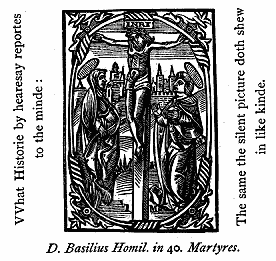

Charity is a virtue given from God, by the keeping whereof (as Christ said) we shall possess everlasting life in the kingdom of heaven. (Matth. 22., Luke 10, Matth. 19.)
How many Commandments of God be there?
Ten whereof the first Commandment is: Thou shalt have none other Gods but one: God the Father, god the Son, and God the holy Ghost, three Persons, and one God. Thou shalt worship thy Lord God and only serve him. (Exo. 20., Matth. 4.)
What meaneth this Commandment?
It does prohibit and condemn all idolatry and worshipping of false Gods, art magic, divination, superstitions observations, & all wicked worshipping. And upon the contrary part it requires, that we believe in God and worship him. (Exo. 23., Deu. 18.)
[pg. 26]
How many manner of honours and worship be there?
Three, which be called Latria, Hyperdulia, and Dulia.
What is the honour and worship called Latria?
Latria is a Service, Adoration, honour & worship, that must be given only to God being the beginning & end of every creature. By this honour and worship called Latria: we must honour, worship & reverence the blessed Trinity, and Christ incarnate the second Person in Trinity.
What is the honour, worship, and reverence called Hyperdulia?
Hyperdulia, is a reverence, worship, & honour, due unto no other, but to such as be most joined unto God: as our most blessed Lady mother of God of whom Christ took his manhood.
What is the honour, worship, and reverence, that is called Dulia?
Dulia, is a reverence, worship, and honour appertaining to reverend persons both in heaven and in earth. By this honour called Dulia, we worship and honour the Angels and Saints in heaven. But we do not honour & worship Saints, as putting more confidence and trust in them, then in God, nor with such honor as is due to God. For we honour them as the friends of God, being his Children and heirs by grace, and our Advocates and Intercessors with God the giver of all honor. In earth we reverence their Relics and Images but the honour is referred to the Saints themselves. Also with this honor of Dulia we honour our Parents, Superiors, & all reverend persons. (Damas. lib. 4. ca. 16.)
How is God due honour & service given him?
In our hearts by faith, hope and charity. In our bodies by outward gesture and acts as Sacrifice and fasting, &c.
[pg. 27]
In believing the xii. Articles of our Creed, both expressed in words, and understanded as holy Church does believe and teach: and in having an inward devotion of mind toward God & his Saints for his sake.
How must we honour God by Hope?
We must have a steadfast trust in god, that of his mercy & grace (our good works answering there unto) he will reward us with everlasting joy in heaven.
How must we honour God by Charity?
We must love God with all our hearts so firmly, that neither for fear nor flattery, prosperity, nor adversity we be carried away from God. (Charity. Matth. 22.) And that the love of no creature remain in our hearts, but for God and godliness. With all our souls we must love god so faithfully, that we had rather our souls should be severed from our bodies, then from god. This love makes all things light and easy: this love caused the glorious Martyrs to suffer all kind of torments, both patiently and gladly for the fervent love of God. This ardent love unto God, caused the blessed Fathers in wilderness to take great pains and penance upon them, in fasting, and praying, weeping and mourning. For their meat and drink they used dry bread and cold water, herbs, roots, and barks of trees, for their clothing, heare and sack, the cold earth for a bed: a hard stone for a pillow: and were ready to suffer any cruel death for Christs sake: their hearts were so kindled with a burning Charity towards God.
How many ways, is the first Commandment broken concerning faith?
1 By Infidelity.
[pg. 28]
2 Doubting in faith.
3 Presumptuous searching of faith.
4 Denying of faith.
5 Tempting of God.
6 Unreverence of god.
7 The Art Magic.
Who be they, that break the first commandment of God by Infidelity?
All heretics, idolaters, Turks and Jews, and all they that do not profess the catholic faith both in heart, word and deed, that our godfathers and godmothers promised for us in Baptism: And all they that neglect to learn the Articles of our faith, and the Commandments of god. For we ought to learn the said Articles of our faith & ten Commandments, before we receive the blessed Sacrament of the Altar.
Who be they that break the first commandment, by doubting in Faith?
They that do not steadfastly believe, but doubt whether there be a Paradise, a hell, and a Purgatory. Also they that do not steadfastly believe the blessed Sacrament of the Altar, and other Sacraments of the Catholic Church. For he that doubts in faith, mistrusts the certainty of Gods word.
Who be they that break this Commandment, by presumptuous searching of Faith?
They that presumptuously search the Articles of Faith or doubting, dispute of Faith and Verity. And they that will believe nothing concerning Faith, but that with can be tried and shown by reason: for faith has no merit where mans reason gives experiment. No man can try our his faith by reason. (3. Grego.)
[pg. 29]
Who breaketh the first Commandment by denying of Faith?
They that will not confess the Catholic faith with their mouths, although they believe it in their hearts for a Christian man ought to be of such constancy, that he should rather suffer his life to be taken from him, then his faith. And S. Paul says: we believe in heart to righteousness, and confess in mouth to salvation. (Rom. 10)
Who breaketh the first commandment of God by tempting of God?
They that require of God, or of his Saints, miracles: & seek to be helped of God by miracle where they may be helped by other means. And they that for poverty, sickness, or adversity, do murmur & grudge, that God will not grant them their desire, when peradventure they desire against their souls health. For many times god does not give us that, which we desire: to the intent he have give us that which is is better for us.
Who breaketh the first Commandment of God by unreverence of God?
They that do not give due reverence to God, and his Saints, or to their Relics and Images. Secondly, they that unworthily receive the blessed Sacrament of the Altar. Thirdly, they that unreverently behave themselves before the blessed Sacrament. Fourthly, they that unreverently behave themselves in the Church, or other places dedicated to gods service: as they that will not pray with their mouths, kneel upon their knees, knock upon their breasts, holy up their hands and lift up their eyes when ordered requires, and necessity or reason dispenses not.
Who breaketh the first Commandment by art Magic?
They that of purpose tell destinies by taking of lots, or verses in the scriptures, Enchanters, witches, Sorcerers,
[pg. 30]
interpreters of dreams, & such like prohibited by the law of God: and all they that advisedly use their help to recover health, or to get a thing that is lost.
How many ways is the first Commandment broken, concerning hope?
Three manner of ways: By desperation, by presumption of gods mercy, and presumption of our good works.
Who breaks the first Commandment by desperation?
First, they that by temptation of the Devil, pusilanimitie, or other infirmity destroy themselves upon mistrust of gods mercy. Secondly they that do think their sins so great, that God either can not, or will not forgive their sins. Thirdly, they that heap sin upon sin and will not go about to get remission of their sins. All such break this Commandment.
Who breaks the first Commandment by presumption of Gods mercy?
First, they that continue in sin still, trusting to have mercy without Penance, and everlasting life without good works: & will say, God has created them, and redeemed them, and therefore he must needs save them. Secondly, they that trust only by Christ's Passion, or by only faith to be saved. Thirdly they that continue in sin still, trusting in the hour of death to ask mercy and to have it: which is a presumption without all discretion. For when the heart is pinched with pangs of death, the body vexed with sickness, the mind tossed with the perplexity of hell-fire, and both body and soul environed & compassed about with horrible swarms of Devils: the commonly grace & memory fails to ask mercy. And then it fares (as
[pg. 31]
Scripture says) he that loves danger, shall perish in it (Eccle. 3). For he that will not seek for mercy when he may, often lacks it when he would have it. All such breaks the Commandment of God by presumption of gods mercy.
Who breaks the first Commandment by presumption of good works?
All they that think their merits so great, that they ought to have no adversity in this life, and they shall possess heaven only by their merits. And they that think they can merit of themselves, without the continual grace of god. Such break the Commandment of God by presumption of good works.
How many ways is the first Commandment broken, concerning Charity?
Three manner of ways, by love of worldly things, by worldly fear, and by servile fear.
Who breaks the first commandment by love of worldly things?
First of all, they that love wife, child, master, friend, or themselves more than god. Secondly, they that for worldly gains, preferment, or carnal pleasure neglect their duty to god. Thirdly they that be more careful for worldly things, then for heavenly things, & would still remain in the world if they might. For the love of god & the world can not dwell together in one heart. Nor one heart can serve God & Mammon. All such break the Commandment of God.
Who breaks the first commandment by worldly fear?
First of all they, that for fear of Princes, Lords, Magistrates or Masters, do not obey the Commandment of God.
[pg. 32]
Secondly, they that fear more the displeasure of any man, than of god. Thirdly they that for fear to be talked of or scorned, withdraw themselves from Divine service, or worshipping of God, or of his Saints. Such break this commandment of God.
Who breaks the first Commandment by servile fear?
All they that keep the Commandments of god only for fear of punishment in hell-fire, & not for the love of god: all such break this Commandment of god.
How many causes be there that move us to love God above all things?
Seven especially.
1 Gods chief goodness.
2 He loved us first.
3 He is our Father.
4 He has redeemed us.
5 He provides continually for us.
6 He is present unto us in the Blessed Sacrament.
7 He promised to us a reward, that eye never saw, that ear never heard,
that heart never thought.
OF THE SECOND COMMANDMENT.
What is the second Commandment of God?
Thou shalt not take the name of god in vain.
What means this Commandment?
It does forbid and condemn the abusing and unreverent taking of the name of God, and his Saints, or any other creature: which is committed of perjurers, and blasphemers. No man may swear an oath without a great cause, and that must be before a
[pg. 33]
Judge in verity, in justice, and judgment: that is, truly, uprightly, and advisedly. Otherwise all our talk ought to be, yea, and nay.
How many ways is the name of God taken in vain?
Five manner of ways: By perjury, blasphemy, unlawful vows, breaking of lawful vows, and by unadvised taking of the name of God and his Saints.
How many ways is God offended by Perjury?
Seven manner of ways. First by falsity, in calling
God or his Saints to witness, affirming with an oath that, which is false: or that, which
we think to be false.
Secondly by doubtfulness, affirming with an oath that, which we be
doubt of, although it prove true afterward.
Thirdly, if we promise with an oath to another that, which we intend
not to perform.
Fourthly, if by craft or subtlety of words in an oath we go about to
deceive the hearers understanding.
Fifthly, if we swear to do a naughty act or deed, which oath is not to
be kept.
Sixthly, if we swear to omit a good deed, or work of Charity, which
oath is not to be kept.
Seventhly, if of purpose we compel any man to perjury.
How many ways is God offended by blasphemy?
Seven manner of ways: First if we swear by false
Gods.
Secondly, if we attribute unto God that, which does not agree to him:
as to say, God is not righteous or merciful.
Thirdly, if we deny anything, that agrees to God: as to deny God to
take care of mortal things.
Fourthly, if we attribute unto a creature that, which only
[pg. 34]
agrees to God: as if we attribute to the devil and fortune the power and
dominion of all things.
Fifthly, if we attribute members to God, as concerning his divinity.
Sixthly, if we curse God or his Saints, and will say: God is not
righteous, if we may not have our own will. For as light is odious to sore eyes, and good
meat unsavory to the sick: so God his mercy displeases evil & wicked people.
Seventhly, if we do injury to God or to his Saints.
How many ways is God offended by unlawful vows?
Four manner of ways. First if we make a vow, to do
an evil deed: as to kill a man, or to maim him.
Secondly, if we make a vow against a godly purpose: as not to enter
into religion, or not to give alms.
Thirdly, if we vow a lawful vow for an evil intent, that we have have
our unlawful purpose, so to make God author of evil.
Fourthly, if we make a vow that is foolish, indiscrete, or
unreasonable. And if we do not perform our lawful vow in due time, we break Gods
commandment: yet some vows for a reasonable cause may be changed or dispensed with, by
them that have authority to dispense.
Also, we may break the second commandment of God by unadvisedly taking
of the name of God: as if without need or compulsion we swear in things that be certain,
or if we swear of a perverse custom, or of a purpose by God or his Saints in idle talk or
anger. For he that is accustomed to swear, can not escape perjury.
OF THE THIRD COMMANDMENT
What is the third Commandment of God?
Remember that thou sanctify, & keep holy the Sabbath day. In Moses law the people were commanded to sanctify
[pg. 35]
& keep holy the Sabbath day, which day we call Saturday, or the seventh day. For after that almighty God had created all kind of creatures in six days, the seventh day he rested or ceased to create any new creature. But in the law of grace we do not sanctify or keep holy the seventh day, called the Saturday: but we sanctify or keep holy the day following, called the Sunday or our Lord's day: in the which day christ our Lord arose from death, making mankind (that was created earthly) a heavenly creation, in the day of his resurrection. This precept of sanctifying or keeping holy the Sunday, or our Lord's day, does contain under it, all feasts & holy days instituted & commanded by the Church. And we do sanctify the holy day, when we apply ourselves to the worshipping of God. Therefore upon Sundays & holy days we ought to search our conscience, and purge it from sin: we should cry & call unto God for mercy & grace, thanking him for his manifold benefits bestowed upon us: we ought to have in memory Christ's Passion, Paradise, Hell & Purgatory, so to abstain from sin, & exercise ourselves in things that be godly for our souls health: as in going to the Church, to pray devoutly, reverently to hear Mass, and other Divine service.
How many ways is the holy day broken?
Four manner of ways. By servile work, by omitting the worshipping of God, by unreverence of holy things, by wanton or unlawful plays.
How is the holy-day broken by servile work or labor?
If upon Sundays or holy days we work, or cause other to work any servile labor, that properly pertains to servants: as plowing, carting, digging, & such like, or do use handy crafts, How be it for pity or necessity, some things be
[pg. 36]
permitted to be done upon holy days: as dressing of meat, preparing of a medicine, burying the dead, & such like. Also it is permitted upon holy days to exercise the liberal sciences, as to dispute, or study, to sing, or to play upon instruments. And if necessity do constrain to take a journey upon the holy day, it is permitted.
How is the holy day broken in omitting the worship of God?
If every Sunday and holy day we be not present at Divine service, & if we do not hear wholly one Mass with a devout reverent mind: or if we do not say our Divine service that we be bound unto, if we be not confessed at Easter and receive the Sacrament. In omitting these and such like, we break the holy day.
How is the holy day broken, by unreverence of holy things?
If we hear Mass unreverently, as talking, walking, gasing, or occupying ourselves idlely. And if we misuse the church or church yard, or pollute the same, or if we use anything forbidden by Christ or his Church, we break the holy day.
How is the holy day broken by plays, pastimes, or gaming?
If we misspend the holy day in unthrifty games, as cards and dice for covetousness, or when we should be at Divine service: or if we use dancing for wantoness, or if we frequent taverns or bowling alleys, or if we use any dishonest place or company. By these ways & such like we break the holy day, and so offend god.
OF THE FOURTH COMMANDMENT OF GOD.
What is the fourth Commandment of God?
Honor thy Father and Mother, that thy days may be long upon earth (Exo. 20).
[pg. 37]
In what things does the honor consist, that we must do to our Fathers and Mothers?
In three things. In reverence, obedience, and succoring them. (Ephe. 6. Col. 3.)
How must we reverence our Fathers and Mothers?
In loving them, doing good to them, in praying for them, being afraid lest we should offend them in word or deed. In giving place to them: we must reverence them both in words and gesture.
How do we offend in not reverencing our parents?
First, if we neglect our natural parents, or
kinsfolkes being in poverty or misery, if we deride or scorn them, or stir them to anger,
or if we desire their death for hatred towards them, or for desire of inheritance, goods
or honor, and by such like, we break gods precept.
Secondly, we break the commandment of God, if we do not reverence our
Prelates, Bishops, ghostly Fathers, & other spiritual rulers and governers in Christ's
Church, that have cure & charge of souls. For whosoever does condemn, despise, or
scorn either their carnal parents: or spiritual fathers: be accursed of God, as Cham was
for laughing at his father Noah. (Rom. 13, Heb 13, 1 Pet. 2, Gen. 9)
Thirdly, we break this Commandment of God: if we do not reverence our
God Fathers and God mothers, our superiors and elders both in age, gravity, wisdom, virtue
and learning, or in office, authority and dignity.
In what things must we obey our parents?
In all things appertaining to God, or good manners, in things that be honest and lawful. We must obey them by the example of our Saviour Christ, which was obedient to his parents. And as we be bound to obey our carnal parents, so we be bound to obey our Prelates, Bishops and spiritual govern-
[pg. 38]
ours in Christ's Church: we are bound to obey their precepts, and firmly
to keep their doctrine, that they have taught us, for our souls health.
We must diligently take heed that we be not carried away with any
strange heretical doctrine, & that we entangle not ourselves in schism: steadfastly we
must cleave and stick to the doctrine concerning faith and religion, that has been taught
in Christ's Church by a succession of Pastors and Bishops coming linealy from the
Apostles. Whose doctrine is derived from the Apostles to this day from one to another.
Whosoever does not obey these spiritual Fathers, does greatly offend God.
In what things must we succor our parents?
In comforting them: and ministering necessities to
them. For if any be so unnatural: that they will not comfort them, when they be alive, and
pray for them when they be dead: they break the commandment of God.
Also by this Commandment every man and woman is bound to pay truly
their tithes to their Prelates, & all other debts and duties due unto others.
And as the children be bound to obey their parents, so fathers and
mothers ought to give good example to their Children. But some parents seek so much to
enrich their Children in worldly things: that they purchase everlasting damnation both to
themselves: and to their children. Such parents show themselves to care only for the body:
and not for the soul. If they see their Children in poverty or misery: they lament: but to
see their Children in sinful life they little pass there of. (Ephe. 6)
OF THE FIFTH COMMANDMENT
What is the fifth Commandment of god?
Thou shalt not kill. That is to be understood: thou shalt not without just authority kill or hurt any man in body or in
[pg. 39]
soul. And therefore both the Judge in the commonwealth does lawfully put offenders to death, or otherwise punish them bodily, and the Bishop does lawfully excommunicate wicked or disobedient persons, for the preservation of peace & tranquility in the commonwealth, & in the church.
How many ways do we break this Commandment?
Twelve manner of ways. First if we kill, hurt or
maim willfully ourselves, or any other: or if we command any man unjustly to be killed, or
hurt or give counsel, aid or help there unto.
Secondly, If women by medicine, as by herbs, drinks, or by any other
means kill their Children after their conception: Or if any man kill the Child in the
mothers womb by strokes or by other means. Or if any man or woman procure bareness to
themselves, or to any other.
Thirdly, They break this Commandment, that by witchcraft, or by any
such devilish means, be the cause of any mans death.
Fourthly, They that shorten their life by surfeiting with meats and
drinks, or by riotous wanton life.
Fifthly, Princes, and such as be in authority, if they make laws to put
innocents to death, or any man unjustly: as they that have made laws to put the holy
Martyrs to death: for confessing Christ: and the Catholic faith.
Sixthly, They that of malice do wish hurt death or damnation to any
man: or they that rejoice of any mans adversity: or be sorry to hear of other mens
felicity or they that speak contemptuously of any man: or they that desire God to take
vengeance upon any man or woman.
Seventhly, They that neglect to succor & help them: that be in
extreme necessity. Saint Ambrose does say feed them that be like to die for hunger: for if
thou do not feed hast killed.
[pg. 40]
Eighthly, They that do imagine hurt or displeasure to
any man: or make conspiracies, or take counsel to imprison, to vex or trouble innocents,
or any man for a godly cause, as for the Catholic faith, or Religion.
Ninthly, They that have offended any man, and will not ask forgiveness.
And they that will not forgive them which have offended, but will do evil for evil.
Tenthly, They that kill the souls of the people with heresy, or wicked
doctrine, or counsel, whereby souls are brought to damnation. And they that corrupt youth
with wicked doctrine, or by any means corrupt good manners.
Eleventhly, They that show evil example in word, or deed, and they that
will not admonish their neighbor offending.
Twelfthly, Fathers, Mothers, and Schoolmasters, if they do not correct
Children offending with the rod discretely: for he that spareth the rod, hateth the child
(said Solomon - Prov. 23) They that will not correct the children offending, kill their
souls. By correcting Children with the rod: fathers mothers: and masters may deliver the
Childrens souls from hell. Therefore it is better to be unborn, then untaught. But in
doing correction: anger must follow reason: & be ruled by reason.
We must beware, that we break not this fifth Commandment of God, in any
of these twelve ways before said.
OF THE SIXTH COMMANDMENT
What is the sixth Commandment of God?
Thou shalt not commit adultery. (Exo. 20) Under this Commandment is forbidden all unlawful company in lechery: whether it be fornication between unmarried persons (1 Cor. 6, Matt. 5): deflowering of virgins, rape: incest between kinsfolks: sacrilege as pretended marriage of priests or between religious persons, or in sin against nature: which is most horrible in the sight of God. Also they
[pg. 41]
that be unlawfully married & inordinately give themselves to carnal
lust. For the special cause of marriage ought to be, for procreation of Children. And
under this precept is also forbidden all consent in delectation, & voluptuous pleasure
of carnal concupiscence and lechery: an dishonest handling or touching themselves or
others for lust or unlawful appetite, whereby nature is stirred, or concupiscence kindled.
In like manner they that suffer others willingly & dishonestly to
touch or handle them. Also by inordinate or lascivious kissing or clipping, by bawdy
songs: or dishonest talking, or by any dissolute behaviour: as wanton & unchaste
sight, dancing to the intent to procure wanton love, or to move any to filthy sin. Also
they that be bawdes, to bring any persons together to commit sin: or they that give
counsel, aid, succor or help there unto in word or in deed. Finally if in our hearts we
give a full and deliberate consent to filthy sin of the flesh: which may come of unchaste
sight: or talking, or of filthy thoughts, and imaginations: although we do not accomplish
our filthy lust neither in deed, nor in words, yet we may offend deadly. By all these ways
afore said we may break the sixth Commandment of God, and so set ourselves in a damnable
state.
What means must we use to avoid the filthy sin of the flesh?
First we must consider: that lechery corrupts every age, it confounds all the senses, it breaks all order, it perverts every degree, it assaults young and old, men, and women, wise and simple: superiors and inferiors, it weakens the body: and kills the soul, it lessens good fame: and offends the neighbor, it lessens God: and wins the Devil, it dulls the wit: and makes men beastly: of the temple and members of Christ (Ephe. 5), it makes the temple and members of the Devil. Fornicators and unclean livers shall have no inheritance in the Kingdom of (Apo. 21)
[pg. 42]
god: but their portion and part shall be in the lake that burns with fire
and brimstone. Saint Hierome compares lechery to hellfire, whose flame is pride, whose
sparks are ungodly talk, whose smoke is infamy, whose end is poverty, misery and hellfire.
Consider moreover, the more any man gives himself to voluptuous carnal
pleasure, willing to satisfy this filthy concupiscence: the more shall his desire
increase, and the less shall he be satisfied. It is but a moment: that this filthy lust
delights: but the painful torments due for the same, be eternal in hellfire. That they
will avoid this filthy sin: first must keep their hearts clean from idle filthy thoughts,
by holy meditations of Christ & his Saints. Secondly, they must shut up their eyes
from vain aspects, and their ears from ungodly talk. Thirdly, they must shut up their
mouths from all talk sounding to sin, and use devout prayer. Fourthly, they must chastise
their bodies with abstinence and fasting, watching and exercising of some godly labor:
& flee from idleness and evil company: so by the help of Gods grace this filthy
damnable sin may be avoided.
OF THE SEVENTH COMMANDMENT
What is the seventh Commandment of God?
Thou shalt commit no theft (Exo. 20). By this Commandment we are forbidden, to take, keep, or occupy anything that is an other mans against the right owners will, by violence, fraud, or deceit.
How many ways do we break this precept?
Seventeen ways. First by sacrilege, as robbing of Churches, taking anything away that is dedicated to God or to his Saints, out of the Churches or hallowed place, & putting it to profane use.
[pg. 43]
Secondly by Simony, in buying, or selling, or making
any Simoniacal pact for spiritual gifts or ecclesiastical promotion: as patrons that
nominate or give any ecclesiastical benefice or promotion for profit or gains (Act. 8),
either to themselves, or to some friend of theirs. They also break this commandment, that
obtain holy Orders by giving of money or money worth: and they that give money for any
Ecclesiastical promotion or promise any part of their benefice or spiritual living, to the
intent to obtain any such spiritual living. Whosoever does so give or receive any such
spiritual living, does not only commit grievous sin, but ought to be deprived, and make
restitution to the Church.
Thirdly, by usury in lending money, to the intent to have the same sums
of money again with gains either in money or money worth (Psal. 14). All such usurers are
bound to make restitution to the party. Yet he is urged with great necessity, & can
help himself by no other means, does not offend in borrowing money & promising gain.
Fourthly, by theft, spoiling or robbing openly or secretly.
Fifthly, by deceiving or defrauding, or by any means doing wrong to
children during their nonage.
Sixthly, by bargaining or buying anything of servants, or of any that
have no authority to sell.
Seventhly, they that will not pay their debts or wages that they owe to
any man.
Eighthly, they that use extortion, polling, or oppression of their
subjects or tenants.
Ninthly, scholars that receive money of their parties to buy
necessities with, if they bestow it upon vanities.
Tenthly, they that deceive any man in paying counterfeited money or
gold for good and lawful, although they have received the same for good of others.
Eleventhly, they that hurt or destroy other mens goods, either
[pg. 44]
openly or privily, and they that will not make a recompense for hurt done
to their power.
Twelfthly, they that do not their work truly, that they are hired to
work: and they are bound to make restitution of the damage and loss.
Thirteenthly, they that retain or keep anything that they have found
which another has lost by negligence against his will. For what you have found and
not restored, you have stolen (if you know the owner.) And if by diligent search and
inquisition you can not find the right owner, you are bound to give unto the poor, what
you have found.
Fourteenthly, they that use untrue weights or measures in buying or
selling, or they that sell that for good, which they know to be nought: or sell one thing
for another, whereby the buyer is deceived or in bargaining use crafty or subtle words.
Fifteenthly, they that use craft or deceit in gaining for covetousness
such are bound to make restitution.
Sixteenthly, he that takes and Action unjustly against any man for
gains, or does give counsel and or consent: or they that praise any man in a naughty act,
or they that hold their peace, when they may let an evil deed deceit, or unrighteousness
to be done to any man.
Seventeenthly, they that be in authority, if they do not make laws,
& provision to their power, to repress all injuries, wrongs and deceits before said
for in all these seventeen ways the Commandment of God is broken.
OF THE EIGHTH COMMANDMENT
What is the eighth Commandment of God?
Thou shalt bear no false witness against thy neighbor. First, by this commandment is forbidden all hurtful lying, whether it be in judgment, or in common and familiar talk: whereby hurt cometh to any man or woman.
[pg. 45]
Secondly, it is forbidden, to slander or to speak evil
of any man, or to manifest the secret sin of any man.
Thirdly, it is forbidden, to dispraise, or diminish the good deeds or
acts of any man, to bring him out of favor of estimation.
Fourthly, it is forbidden to use craft to hide the truth, being called
in judgment to witness the truth.
Fifthly, it is forbidden, to deride or scorn others with scornful
words, or to object a crime to do displeasure to any man or woman.
Sixthly, it is forbidden to detract or impair the good name or fame of
any that is absent whether they say true or false, they ought to restore their good name
and fame.
Seventhly, it is forbidden to take pleasure to hear evil spoken of any
man or woman: for every man ought to answer for his neighbor, to defend his good fame.
Eighthly, he does offend God grievously, that does defame or slander
himself.
Ninthly, they that curse themselves or others with evil words of
mischief, or vengeance, or such like ungodly words: & also they that ask vengeance or
mischief upon unreasonable creatures, such as cattle, corn, ground, & such like, break
Gods precept.
Tenthly, it is forbidden to judge rashly, or to take, or to interpret
the words or deeds of any man in the worst part: for in things that be doubtful, we ought
to judge the best.
Eleventhly, it is forbidden to use whispering: with contentious words
to provoke any man to wrath: or to set dissention between party, and party, or to cause
dissention to continue.
Twelfthly, it is forbidden to use flattery as to praise any man or
woman of a deed that is deadly sin or to praise any many or woman to the intent to hurt
them in body, or soul or by flattering or praising to be the cause of deadly sin.
Thirteenthly, it is forbidden, to use dissimilation in words or
[pg. 46]
deeds, Also is is forbidden, to break honest and lawful promises.
Fourteenthly, it is forbidden, to hurt the souls of the people with
heresy and false doctrine, contrary to the Catholic faith whereby the people are deceived
and brought into state of damnation. Heretics bear false witness with the Devil against
christ & his dear spouse the Catholic Church. They maintain falsity against the truth
& although they be punished or put to death by burning or other wise: yet they receive
no crown of Martyrdom, but they receive punishment worthily for their infidelity and false
witness against the truth. So heretics be Children, Martyrs, and witnesses for the Devil
against Christ & his Church. Thus all manner of lies are to be detested, and are
forbidden by the Commandment of God.
OF THE NINTH COMMANDMENT.
What is the ninth Commandment of God?
Thou shalt not covet or unlawfully desire thy neighbors wife maid or daughter. As in the sixth commandment all carnal lust outwardly appertaining to the sin of the flesh is forbidden: so in this precept is forbidden all inward concupiscence and unlawful carnal desire of thy neighbors wife daughter, or maid, in heart & mind for may are chaste in body, that have committed adultery or lechery in will. Christ saith in mind to commit carnal act with her: already in his heart he has committed lechery with her: for although the thoughts be hidden from man: & cannot be judged by mans law: yet all things that we imagine or think in our hearts, are open and unhid to the eyes of God. And the will & intent that is ready to commit sin, is repute before god as the fact and deed done, being letted against the will. For he that hath a full will to co-
[pg. 47]
mmit lechery, if opportunity of time would serve: breaketh this Commandment. Also they that be negligent to resist temptations or to repress & refrain the passions or concupiscence of the flesh, or suffer thoughts of carnality to continue with delectation in their minds. For everyone ought to defend their chastity, as their lives. Finally, they that trim or deck themselves to allure & provoke others to their carnal love, or use flattery or dissimulation to provoke other to sin: all such break the commandment of god.
OF THE TENTH COMMANDMENT.
What is the tenth Commandment of God?
Thou shalt not covet thy neighbors goods. As in the
eighth Commandment, the outward act of theft, damage and hindrance is forbidden to be done
to thy neighbor in his soul, body, or goods: so in this tenth Commandment is forbidden the
inward will & desire unjustly to have thy neighbors goods. For they that refrain to
take or keep their neighbors goods only for fear of worldly punishment or shame, break
this precept. And they that be ready in mind and will, to put forth their money to usury,
or to be in will to steal: to take any mans goods to keep them, or hurt them or to
withhold anything that is found, if opportunity to time would serve there unto: all such
break this Commandment. Also they that play at any game for the intent to get their
neighbors goods break this Commandment.
Also they that covet to have any Ecclesiastical promotion, authority,
and dignity by unlawful means, break this Commandment. No man may do evil, to the intent
that goodness may come thereof: and much more grievously they offend God, that desire
goods: lands dignities, or promotion, to maintain their solace and worldly pleasure.
[pg. 48]
What is the sum of the ten Commandments?
The sum of the ten Commandments does consist in the
love towards god, and our neighbor (Ephe. 4., Matt. 7.).
In the first Table be three Commandments: which take away and forbid
sin and vice against the worshipping of God. They forbid idolatry, apostasy, heresy,
superstition, perjury, blasphemy, and move us to the pure and true worshipping of God in
heart, word and deed. In the Second table be seven Commandments, which command us to give
reverence and honor to every man in his degree, to profit all, and hurt none: to do unto
others, as we would be done to ourselves.
OF THE FIVE COMMANDMENTS OF THE CHURCH.
Ne dimittas legem matris.
Forsake not the law of thy mother. (Prov. I)
How many Commandments be there of the Church that we be bound to keep?
There be five precepts especially Commanded by our
mother the catholic church christs dear spouse, which we are bound to keep (Mar. I.). For
if we should be disobedient children to our mother the catholic Church, & not obey her
precepts, we can not have God to be our loving father (Cyprianus).
The first precept is, that we celebrate and keep holy days commanded by
the Catholic church. As in the old Testament the people were bound to celebrate diverse
feasts beside the Sabbath day: so in the new Testament we are bound to celebrate diverse
feasts besides the Sunday (Concil. Lugd. Holy days).
The second precept is, that every Sunday and holy day we reverently
hear Mass (2. Mass. Concil. Agath.)
The third precept is, that we keep the fasting days commanded by the
Church: and obstain from such meats as the Church does prohibit & forbid (3. Can.
Apost. 68).
[pg. 49]
Fourthly, every man & woman once in the year is
bound to be confessed of all their sins to their own Curate: or to some discreet Priest
that has authority to absolve them of their sins (4. Concil. Later. Confession).
The fifth precept is that every man & woman having reason &
discretion: once in the year at the least, receive the blessed Sacrament of the Altar, and
especially at Easter time. These and such like precepts of the Church we are bound to
observe and keep. The observing of these precepts and such like is both profitable, &
necessary (5. Concil. Later.)
First, for the exercise of our faith, humility, and Christian
obedience.
Secondly, because they nourish, keep and maintain godly worship, honest
discipline, and public tranquility, and marvelously set forth all things in a decent order
in christs church.
Thirdly, the charitable keeping of them brings everlasting life: but
the condemning of these precepts and such like of holy church brings everlasting
damnation.
THE FIVE SENSES.
Exhibete membra vestra seruire iustitice, in sanctificationem.
Bestow your members to serve justice for sanctification.
How many outward senses hath God given to us?
Five: Sight, Hearing, Smelling, Tasting, &
Touching: the which Senses we ought to use to the honor of God, to the health of our
souls, & the necessary use of our bodies. And except with great diligence we keep
& refrain the said outward Senses, they be as open windows for sin and death to enter
in at, to our souls.
God has given to us our eyes that we may see to flee from such things
as be hurtful, either to our bodies or to our souls:
[pg. 50]
and keep such things as be good & necessary. And as this sense of
sight is more excellent then other senses, so is it more perilous: for except our sight be
restrained and ruled by reason, it does allure and entice us to many sins.
First, they offend God by sight that take pleasure to look upon their
own comliness of body or clothing: and such like.
And they that with proud looks turn their eyes from place to place.
They also, that give their eyes unchastly to look upon any: for a
wanton and unchaste eye is a sign of an unchaste heart and mind.
And they that idly behold the gesture or gate of any.
And they that seeing another mans felicity, be sorry, or seeing another
mans calamity rejoice.
And they that for hatred, disdain to look upon any man.
And they that seeing another mans goods, desire the same.
And they that take pleasure, to look upon filthiness, or any
ungodliness.
All such as are before spoken of, misspend their sense of sight, & commit sin. God
hath given to us our ears, to hear such things as be good and honest. God being a
marvelous craftsman, would that man should have two ears, and but one tongue, to the
intent he should hear more, then he should speak. Our ears are given to us, to perceive
the doctrine of God, for our souls health.
All these ways following, we do misspend our sense of hearing, and so
offend God.
If we be angry (more then reason does permit) when we hear anything
that does not please us.
If we take pride to hear our own praise.
If we take pleasure to hear lascivious or wanton talk, scoffing,
flattering or slanderous words.
[pg. 51]
If we take pleasure to hear heresy or devilish
doctrine.
God has given to us the sense of smelling, whereof the nose is an
instrument, to draw sweet smells to the brain, that be profitable to the body & not
hurtful to the soul. These ways following, we may misspend the sense of smelling.
If inordinately we be delighted with the pleasant smell of delicious
meats, desiring the same.
If for lasciviousness or voluptuousness, we be delighted with sweet
odours, ointments, powders or perfumes.
If we abhor the poor or sick & be over careful, least we should
feel the odor or smell them.
God has given to us the sense of tasting, whereof the tongue is an
instrument, to taste or discern savour or taste in such things as be for the nourishment
of the body, & not hurtful to the soul. This sense of tasting, except it be ruled by
reason, it brings many infirmities to the body, & is cause of sin.
We do misspend this sense of tasting by surfetts of meats or
drunkenness, or being overmuch delighted in delicious meats & drinks: And in breaking
fasting days, or in eating flesh or other meats for deliciousness, at such times as the
Church does prohibit and forbid the same.
God has given to us the sense of touching, which consists in all parts
of the body, but especially in the hands: for there is a multitude of vaines & sins
come together. This sense is given to us, that we should use it to the profit of our
bodies and souls.
We do misspend this sense of touching: If we in malice we kill, wound,
or strike any man. If we steal, rob, or take anything unjustly. If we unchastly touch
ourselves or any other. And as we do misspend these five sense, so we do misuse other
parts of our bodies, and let sin enter into our souls.
CHAP. 4. (Of the 7 Sacraments.)
Sapientia cedisicauit sibi domum, & excidit septem columnas (Prov. 5.).
Sapence has built her a house, and has cut out seven pillars.
What is a Sacrament?
A Sacrament is a visible form of an invisible grace, which is instituted of God for our sanctification (Aug. li. 3. de doctri. Christia.). In every Sacrament is an outward form or manner that we may see with our corporal eyes: under the which lies hidden an invisible grace, that we can not see with our corporal eyes: which we must firmly believe (Amb. li. 4. Sacra.). As in Baptism we see the Child washed in water, and we hear the words of Baptism spoken, but invisibly the grace of the Holy Ghost does purge the Child from sin: So the flesh is washed, that the soul may be purged.
How many Sacraments did Christ institute?
Seven, which be expressed in the Scripture: & they have continually been kept in the Catholic Church, & used by tradition from the Apostles, from man to man, until these our days. The sacraments be these: Baptism, Confirmation, Penance the Sacrament of the Altar, Extreme unction, Order: and Marriage, the which concerning the invisible grace that they give to the worthy receivers of them, take their efficacy & strength of the merits of Christs Passion.
Why did Christ institute these seven Sacraments?
Christ did institute the Sacraments for four causes.
First, to be medicines and preservatives against sin.
Secondly, to be means & helps to the keeping of the Commandments of
God.
Thirdly, to induce us to humility and obedience, to bring us to
knowledge and exercise of virtue in the fear of God.
[pg. 53]
Fourthly, to be instruments or vessels, whereby God
does pour abundantly his mercy and grace into our souls, & makes us apt to receive the
fruit and benefits of his Passion.
OF THE SACRAMENT OF BAPTISM.
What is Baptism?
Baptism is the most necessary Sacrament of the new Testament, instituted of Christ, specially to wash away original sin, & all other sin done before Baptism. By baptism we be regenerated & born again of water and the holy Ghost, and made Children of God by adoption & heirs of the Kingdom of heaven: Without Baptism: either in act or in will, note can be saved. (Joh. 3, Rom. 6, Gala. 3)
What is the effect of Baptism?
The effect of this Sacrament is to wash away all manner of sin so clean, that no satisfaction is to be enjoined: for if any die after Baptism, before they commit sin, their souls go straight to heaven.(Concill.Florent.)
In what things does Baptism consist?
In two things especially, the matter and form. The matter is water, a simple element (Concil. Florent.). No Baptism can be in wine, rose water, or any confect liquour. The form is the words of Baptism, which are: Ego te baptiso in nomine Patris, & Filii, & Spiritus Sancti: or I Christen thee, in the name of the Father, & the Son, and the holy Ghost. Amen.
Who is the minister of this Sacrament?
Ordinarily the priest is the minister of the Sacrament of Baptism, but in time of necessity a deacon, or a layman, & in the absence of a man: a woman may baptize, or for lack of other
[pg. 54]
an Heretic or paynim may Christen: so that they keep the form, and have
the matter, having an intent to do that which the Catholic church does. But it is to be
noted, that the minister, when he dips the Child in the water, or puts water upon his
head, which is the principal part of the Child at the same instant time must speak the
words of Baptism.
If any layman or woman take upon them to Christen a Child, except it be
in peril of death (when a Priest can not be had) they offend God grievously in the sin of
presumption.
Whether may one be Christened twice?
One Person can be christened but once. Baptism can not be iterated in any one Person: for Baptism does impress & give a Character or a distinct spiritual sign, that can not be done away.
What do Godfathers and Godmothers for Children in Baptism?
Godfathers and Godmothers become sureties for children, and do promise in the Childrens name, that they shall forsake the Devil, and all his works & pomps. Godfathers & Godmothers also become surities for Children, and promise, that they shall believe all the Articles of the Creed. Therefore Godfathers and Godmothers ought diligently to look to their charge, when to teach them, or cause them to be taught the Catholic faith and Pater noster.
Why be ceremonies used in Baptism?
Ceremonies be used in baptism partly against the power of the Devil: partly for instruction both of us, and of them that be baptized.
[pg. 55]
Why be Exorcisms done over the child without the Church?
For by cause before the child be christened, he is no part of Christs Catholic church.
What profit has the child by the Exorcisms?
By the exorcisms the Devil is driven away, which goes about to let the child from Baptism.
Why is the sign of the Cross made upon the child.
The flesh is signed and crossed, that the soul may be armed and defended. The sign of the cross is made in the childs forehead, which is a place of shamefastness, that the child should never be ashamed to confess the faith of Christ. The sign of the cross is made upon the childs breast, steadfastly to believe the faith of christ. The sign of the cross is made in the childs hand to bless itself, & defend itself from the Devil, and all adversities, and to abide in the Catholic faith. (The sign of the cross. Tertul.)
Why is Salt put into the childs mouth?
The Salt does signify heavenly wisdom, given to the Child by the holy Ghost, to be used with discretion.
Why does the priest put spittle into the Childs ears and nose?
The Priest does put spittle into the childs ears and nose, after the example of Christ healings a deaf man by putting his fingers in his ears, by spitting, and touching his tongue (Mat. 7): that the childs ears may be open, to hear wholesome doctrine, & to savour and taste that, which is godly.
Why does the Priest anoint the child with holy Oil upon the breast and back?
The child is anointed upon the breast with holy Oil, to signify: that the holy Ghost should always dwell in that heart and breast by faith and charity.
[pg. 56]
The child is anointed upon the back with holy Oil, to signify the yoke of our Lord, which is sweet and light.
Why is the child anointed with holy Chrism?
The anointing of the child with holy Chrism on the head does signify, that thereby the child is incorportate to Christ, the head of the mystical body of the Church, and of holy Chrism & Christ, we take the name of Christians: so the flesh is anointed, that the soul may be consecrated and hallowed to everlasting life.
What does the Chrism signify?
The chaste garment of innocency, and cleanness of a new life.
What does the candle signify?
The light of our good works, that we must keep
diligently, to enter in with the five wise virgins, when Christ shall come to the
marriage. (Mat. 25)
OF THE SACRAMENT OF CONFIRMATION.
What is Confirmation?
Confirmation is a Sacrament (Act. 8), whereby the grace, that was given in Baptism, is confirmed & made more strong by the seven gifts of the holy Ghost (Con. Flor.). For although the visible sign of the holy Ghost does now cease, that was manifestly seen in the Apostles time (Act. 19): yet the same grace invisible is given in Confirmation.
In what things does the substance of this Sacrament consist?
The substance of this Sacrament consists in the matter and the form: The matter is holy Chrism confect and made of oil olive and balm (Concil Florent.), consecrated of a Bishop, and
[pg. 57]
every year it is renewed, and the old Chrism burned. The oil does signify
the cleanness of conscience by the infusion of grace, and the fervent zeal of charity
toward the maintenance of Christs faith: wherewith he is indued that is Confirmed.
The balm does signify the odor of good fame, and also the sweetness of
Gods holy spirit, wherewith Christ does allure and draw us to his service.
The form is the words of Confirmation that the Bishop does speak, when
he makes the sign of the Cross upon the forehead, with holy Chrism.
Who is the minister of this Sacrament of Confirmation?
In this Sacrament the holy Ghost is given to make them that be confirmed more strong in grace: as the holy Ghost was given to the Apostles in the day of Pentecost: so in Confirmation grace is given, boldly to confess the name of Christ and all things belonging to a Christian man. Therefore whosoever is confirmed, has a Cross made in his forehead with holy Chrism, where as is the seat of shamefastness: least he should be ashamed to confess Christ, & that he is a Christian.
What Ceremonies be used in Confirmation?
First, he or she that cometh to be confirmed, must
have one godfather or on godmother (that is already confirmed,) to hold them up to the
Bishop.
Secondly, they that receive confirmation, have a blow on the cheek
given to them of the bishop, in remembrance that they must suffer patiently & gladly
rebukes and tribulation for the name of Christ and righteousness sake.
[pg. 58]
Thirdly, they that receive confirmation, for the space
of three days ought to have and bear about with them, a band, in signification, that
christ lay three days in his sepulchre, & upon the third day they that be confirmed,
but be brought to the Priest, and then in the holy place the Priest washes of the chrism
with salt and water, and burns the band, casting the ashes in the Churchyard.
In some countries they use to tie the band upon the forehead of them
that be confirmed, where the bishop made the sign of the Cross with holy Chrism.
In England they use to tie the band about the childs neck, and upon the
third day the Priest loosed the band, and there with washed of the holy Chrism with holy
water.
OF THE SACRAMENT OF PENANCE
What is Penance?
Penance is a Sacrament, whereby a penitent sinner is purged, absolved, and made clean from sin. For if any commit deadly sin after Baptism, the only refuge is to the Sacrament of Penance: without which Sacrament in act or in will, they that have committed mortal sin can not be saved. (John 20., Concil Florent.)
What is the matter of this Sacrament?
The matter of the Sacrament of Penance is the humble & true confession of a penitent sinner, that is contrite in heart for the sin committed: plainly confessing before the Priest (sitting in Gods stead) the sin done, being in will and mind not to commit sin again, and being content to do satisfaction by the appointment of his ghostly Father.
What is the form of this Sacrament?
The form of the Sacrament of penance is the words of absolution, that the Priest speaks over the sinner: by
[pg. 59]
virtue of the which the holy Ghost works remission and forgiveness of sin, so that the sinner being penitent is purged and made clean from sin, as he was in baptism: saving that the penitent sinner after confession must do penance, or suffer pains for his sin, either in this life, or in Purgatory.
How many parts of Penance be there?
Three: Contrition in heart, Confession with mouth to
a ghostly Father, and Satisfaction in works: so that whosoever will be purged and made
clean from sin, must be sorry in heart for the sin done, willing to offend no more, and
then plainly confess the sin with the circumstances thereof: as how often, the place, the
time, age, & degree of persons, naming none by name.
These circumstances may alter and change the kind & nature of the
sin, they may aggravate or diminish the sin. Thirdly, the sinner must bring forth fruit of
penance by the appointment of his ghostly Father.
Who is the minister of this Sacrament?
The priest is the minister, whose office is to hear the Confession, and then to discern between sin and sin: to give counsel how to avoid the occasion of sin, and there upon to enjoin penance, & to pronounce the words of absolution over the penitents sins.
How many manner of sins may be forgiven by this Sacrament?
Two manner of sins, deadly sin, and venial: but deadly sin can not be forgiven without this Sacrament, in deed or in will. Venial sin may be purged by prayer, almsdeeds, by the worth receiving of the Blessed Sacrament of the altar, by taking of holy water, knocking upon the breast, with holy meditation, the Bishops blessing and such like.
[pg. 60]
How shall we discern deadly sin from venial sin?
Deadly sin so much displeases God, that thereby we
be separated from God & charity, in such sort, that dying therein, without this
Sacrament of penance in act or in will it brings everlasting damnation. (Eph 5.) The
scripture notes, that all fornicators, adulterers, unclean livers, thieves, robbers,
extortioners oppressors unlawful covetous persons, common drunkards, slanderers, wicked
speakers, idolaters, unbelievers witches, sorcerers, they that be malicious enemies,
contentious persons, brawlers, and chiders, dissentious persons, they that make sects or
divisions, manslayers, and they that deny God for fear of man: these and such like commit
deadly sin, and dying therein without Penance, they shall have no inheritance in the
kingdom of heaven: but their portion and part shall be in the lake that burns with fire
and brimstone. (Phil. 3, Col. 3, Apo 21)
In the foresaid sins we may offend deadly, three ways.
In deeds, or acts, as in satisfying our malice, contempt or in ordinate
concupiscence, in the sins before said. In words, advisedly expressing our malice or
concupiscence in the sins before said. In our thoughts, imagining with consent, by
deliberation & delectation, any evil or displeasure to any man or giving full consent
with deliberation to the suggestion of the devil & carnal concupiscence: where the
will & intent is counted for the deed of deadly sin before God. (Mat. 21, Mat. 16)
Venial sin is committed by acts & deeds, wherein is neither malice,
nor contempt, but curiosity or vanity: as idle words and thoughts without consent of evil.
By venial sin we be not destitute of grace, nor separated from subjection to God, not we
do not lose our Charity: but yet thereby our souls be darkened, & we are made less apt
to any good work and a temporal pain is due for venial sin, either in this life, or in
Purgatory, if we be not purged by such means, as God and holy Church
[pg. 61]
has ordained for the same. But exactly to determine and judge of venial sin appertains to God, and not to man.
What is the effect of the Sacrament of Penance?
The effect of the Sacrament of Penance, is to purge a sinner, and absolve him from all sin, to restore him to the Church, to reconcile him to God, to enrich him with spiritual gifts, and of the child of the devil to make him the child of God.
How must they behave themselves that would be confessed?
They must humbly kneel down at the Priests feet, and make the sign of the Cross upon their breast, and bless them in the name of the Father, and the Son, and the holy Ghost, and then say, Benedicite, And when the priest has given them a benediction, they must begin to acknowledge themselves sinners to God our Lady Blessed Mary, with all the holy company of heaven before their ghostly father sitting in Gods stead: then plainly express & declare their sins committed in thought, word, and deed, in breaking the Commandments of God: and how they have offended in the seven deadly sins, and branches of the same, in misspending the five outward senses, in not fulfilling the seven works of mercy bodily and ghostly. These things with the circumstances declared, the Priest will give the penitent sinner counsel how to avoid sin, and upon Penance enjoined, give him absolution.
Whether may every Priest hear confessions and give absolution?
Although every Priest in extreme necessity may hear confessions and give absolution yet such priests as be heretics, or excommunicated, suspended or condemned ordinarily, may not loose, nor bind. Every man and woman is bound to be confessed of their own proper curate: except either by license
[pg. 62]
of their own curate, or otherwise they have license from the Bishop or superior authority, to choose them a discrete Priest to be their ghostly Father.
Whether may every Curat of his ordinary authority absolve for every sin?
No. For there be some sins so grievous, that none may absolve, but the Pope or his Legate: as burning of Churches, violent striking a Priest, and counterfeiting of the Popes letters or Bulls. Some sins appertain to the Bishop, or his Penitentiary to absolve: as incest between kinsfolks, deflowering of virgins, manslaughter, breakers of vows, perjurers, witches, sorcerers, robbers of Churches, they that strike their Fathers or Mothers, Sodomites, burners of houses, they that overlie their Children, blasphemers, heretics, adulterers, an such like. Whosoever has committed any of these, ought to go to the Bishop, or to his Penitentiary for absolution.
How often in the year is every man and women bound to go to confession?
Every man & woman is bound (at the least) once in the year (at Lent) to go to Confession: and as often as they receive the blessed Sacrament of the Altar, if they know or suspect themselves to be in deadly sin.
Whether is any man or woman bound, to iterate and confess
again any sins, that they have once confessed to a Priest?
In three cases we are bound, to iterate and confess
again our sins.
First, if the Priest that we were confessed of, lacked authority to
absolve such sins as we had done.
[pg. 63]
Secondly, if the Priest that we were confessed of,
lacked discretion & knowledge, to discern and judge our sins.
Thirdly, if we have divided our confession, showing part to one Priest,
and part to another, by means of whereof our ghostly father could not plainly understand
our sins with the circumstances.
OF THE SACRAMENT OF THE ALTAR.
What is the Sacrament of the Altar?
It is a Sacrament, wherein is contained the body and blood of our Saviour Christ: which is consecrated upon the Altar by a lawful Priest at Mass. (Mat. 16., 1 Cor. 1., Concil Latera.)
What is the matter of the Sacrament?
The matter of the Sacrament is bread of wheat, and wine of the wine mixed with water: which does signify the blood and water that did flow out of Christs side, when he was pierced to the heart with a spear.
What is the form of this Sacrament?
The form of this Sacrament is the words of Christ wherewith this Sacrament is made, for the Priest speaks in person of Christ. By virtue of the words of Consecration in substance of bread is turned & changed into the very body of Christ. And the substance of wine is turned into the blood of Christ, the holy ghost working by a divine power: so that Christ is wholly under the form of bread, & in every part of the Host being broken, christ is wholly. And under the form of wine, & every part thereof being separated, Christ is wholly.
[pg. 64]
What is the effect of this Sacrament?
The effect of this Sacrament is to knit, join and incorporate the worthy receivers thereof unto Christ. By the worthy receiving of this blessed Sacrament grace is increased, virtue is nourished, steadfastness is given against frailty, strength against temptation, the merits of Christs Passion are revived in us, our bodies & souls are spiritually nourished with this blessed Sacrament (being the blessed fruit of holy Mary) to be a medicine, to expel the poison that came to all mankind by the fruit that our first parent tasted of, in Paradise. As the fruit brought everlasting death and damnation, so this blessed Sacrament is a pledge, to bring us to everlasting life, and to restore us to the joy that was lost by our first parents. (Concil Florent.)
Who is the minister of this Sacrament?
The Minister is a priest lawfully ordained and consecrated by a Bishop. It is required, that the Priest does consecrate at Mass, having an intent to consecrate the body and blood of Christ.
Who is bound to receive this Sacrament?
Every Christian man and woman having discretion, that is twelve years of age and elder, is bound at every Easter time to receive & at other times as their devotion will serve them (Concil. Latera.). In the primitive Church the people used often to receive, as every Sunday. Afterward devotion began something to decay, that customably the people received three times in the year: as at Christmas, Easter, & Pentecost. Then afterward devotion waxed so cold, that it was thought good to the Church, to make a law, that every man and woman upon pain of deadly sin, should receive the Blessed Sacrament at Easter time at the least. And it is convenient, that every christian man and
[pg. 65]
woman against death receive this Sacrament, to be their voyage provision.
How ought every man and woman to prepare themselves to receive the blessed Sacrament?
First, they ought diligently to examine their own
conscience ( 1 Co. 11.) and if they perceive any deadly sin in them, with a penitent heart
they ought to confess their sin to a discrete Ghostly Father, they have authority to
absolve them from their sins: so having their conscience purged from sin, & with a
fervent and reverent devotion, worshipping Christ in the blessed Sacrament, they may
safely receive. For as the benefit is great in the worthy receivers, so the unworthy
receive their own damnation.
OF THE SACRAMENT OF EXTREME UNCTION
What is the Sacrament of extreme Unction?
Extreme unction or anointing is a Sacrament, wherein the sick persons (by holy Oil and the words of christ) are relieved, that more happily they may depart out of this world, and also that their bodies may be restored to health, if it be expedient. (Jacob. 5., Concil Florent.) This Sacrament is to ministered to men and women lying in extreme sickness in peril of death, by Gods visitation, and not by violence of war, or execution. And this Sacrament is not to be ministered unto infants, and such as lack reason: for none ought to receive this Sacrament, but such as have reason, & humbly desire it for gods sake.
What is the matter of this Sacrament?
The matter is oil olive hallowed by a Bishop, wherewith the sick is anointed upon the eyes, ears, mouth, nose, hands, & feet. A man is anointed upon the reines of the back, and a
[pg. 66]
woman upon the belly: because concupiscence reigns most in those parts.
What is the form of this Sacrament?
The form is the words, that the Priest speaks, when he does anoint the sick in the foresaid parts or places.
What is the effect of this Sacrament?
The effect of this Sacrament of anointing is, to put
away and purge venial sin committed by misspending of our senses & to purge and put
away sins forgotten.
This Sacrament is comfortable to the soul, and healthful to the body,
as much as is expedient. And in this Sacrament the holy Ghost does strengthen the sick
with grace against the violent assault of the Devil, and the terror of death.
Who is the Minister of this Sacrament of Extreme Unction or anointing?
The priest is the Minister of this Sacrament, whom the sick ought to send for, & before that he receive this Sacrament, he ought to be confessed of his mortal sins, and receive absolution of the Priest, and also the Sacrament of the Altar, and humbly desire the Priest for Gods sake to be anointed.
How should the Priest anoint them that lack eyes, hands, or any
such parts as should be anointed?
The Priest must anoint the parts that be there next
adjoining unto these parts that should be anointed: for although any lack such parts
wherewith they may offend inwardly about those things that appertain to those members,
although outwardly they can not be expressed.
[pg. 67]
OF THE SACRAMENT OF ORDER.
What is the Sacrament of Order?
Order is a Sacrament, wherein grace or a spiritual power is given to Priests, & to other ministers in their Consecration, by the outward sign of imposition of the Bishops hands, to exercise effectually the ministration of the Church, as in ministering of Sacraments, preaching and exercising of discipline. And whatsoever they do in the Church, according to the institution of Christ & his Church, almighty God does ratify, accept, & allow. Therefore all people of whatsoever degree, estate, or authority they be, ought to obey the Bishops & Priests in causes Ecclesiastical. This is a power of the Church, given to them that be lawfully ordained & consecrated, which power is not by laws of men, or of nature, but only of Christ above nature. (Con. Flo., Mat. 10. 3., Tit. 3., Act. 13.)
What is the matter of this Sacrament?
The matter is that thing, by delivering of which Order is given: as Priesthood is given or delivered by giving of the chalice and Paten with bread and wine. Deaconship is given by delivering of a book of the Gospels. Subdeaconship is given by the empty Chalice & Paten. And in like manner the inferior Orders have some special matter appertaining to their Order: as the giving of the keys to the Ostiarie or Porter, and book to the Exorcist, the book of Psalms and Prophets to the Reader called Lector, the Candle & Cruet to the Accolyte.
What is the form of this Sacrament?
The form is the words of Order, which the Bishop speaks: whereby an authority is given, to exercise some office in the Church, as in Priesthood the formal words be:
Accipe potestatem offerendi Sacrificium, Missasque celebrandi, tam pro viuis, quam pro defunctis, in nomine Domini.
[pg. 68]
By these words, the Bishop gives authority
& power to him that receives Priesthood, to offer Sacrifice, and to celebrate Mass
both for them that be alive, & for them that be dead, in the name of our Lord.
Whosoever shall receive the Order of Priesthood, must by degrees
receive six orders before of the Bishop: of the which Orders four be called Inferior
Orders.
Exorcists, which have authority given to them, to expel Devils from
them that be possessed.
Ostiaries or Porters have authority, to keep the Church door, to expel
the unworthy, and to let into the Church the faithful and worthy.
Readers, called Lectores, have authority to read lessons and
scriptures in the Church: whereby the understanding of the faithful people is lightened.
Acolytes have authority to bear Cruets to the Altar with wine and
water, and bear candles and tapers: wherewith the mind of the people may be kindled and
stirred to devotion.
These four Orders have not continency so annexed unto them but that
they may marry. Subdeacon, Deacon, and Priest, have Continency so annexed to their Orders,
that them may not marry.
Subdeacon has authority given to read the Epistle, to prepare
necessaries for ministration, and to assist the Priest in ministration.
Deacon has authority given to him from God by the Bishop to read the
Gospel, and to assist the Priest in ministration of the Sacraments, and other offices in
the Church.
The Priest has his hands sanctified and hallowed by the bishop to
sanctify and bless. And authority is given from God by the Bishop to the Priest, to
minister Sacraments, that is: Baptism, whereby people first enter into the Church of God.
Secondly, if after Baptism any man fall into deadly sin, the
[pg. 69]
Priest has authority, to absolve them, if with a contrite heart they
confess their sin before him.
Thirdly, the Priest has authority, to consecrate and minister the
Sacrament of the Altar.
Fourthly, the Priest has authority, to pray over the sick persons and
to anoint them with Holy Oil in the name of God, to the remission of their sins, and to
the salutation of the sick, according to Gods pleasure.
Fifthly, the Priest has authority, to join those two persons together
in matrimony, that Marry in Christ.
What does the Crown signify?
It does signify, that they should be as kings, to
rule and govern spiritually, both them selves, and others. The shaving of the hairs upon
the crown of the head, does signify the renouncing and putting away of earthly affections,
and the lifting up of their minds toward heaven, making them selves heirs of God, that
they may have their portion and part with God.
The round circle of the crown does signify perfection of life.
How many things do let to take Orders?
First, a woman may not take Orders, nor a child, nor
any that lacks discretion, but he must be a man of full age, that shall take holy Orders.
Secondly, a servant that is in bondage to his Master without his
Masters consent, may not take holy Orders: for if he do, his Master may compel him to do
his service.
Thirdly, a manslayer in deed or consent, may not take holy orders.
Fourthly, he that is not legitimate, may not take holy orders without
dispensation.
[pg. 70]
Fifthly, he that is married may not take holy Orders
(for continency is annexed to holy Order) except by consent of his wife, who must vow
chastity.
Sixthly, he that is Bigamist, which has married two wives, and knows
them both carnally or he that has married a widow or a woman that is corrupt of an other,
if after carnally he know her: or if he carnally company with his own wife, after that she
has committed adultery with an other man: such a man may not take holy Orders.
Seventhly, he that lack any member, or has defect or deformity, may not
take holy orders.
Eighthly, he that is infamed, or a slanderous person having any
notorious crime, may not take holy Orders.
Who is bound to say Canonical hours daily?
He that is within holy orders is bound to say Canonical hours. For canonical hours, as Matins, Prime, and Hours, Evensong, and Compline, with other divine service, be annexed to holy Orders to give God thanks. Also they that be beneficed, be likewise bound. If for negligence or sloth any do omit their divine Service, they offend God. (Concil. Later.)
Who is the minister of this Sacrament of Order?
The Bishop ordinary is the Minister.
What is the effect of Order?
The effect of the Sacrament of Order is, to give increase of grace, by the imposition of the Bishops hands, whereby one may be a meet minister in the Church of God. (Con. Flor.)
OF THE SACRAMENT OF MATRIMONY
What is Matrimony?
Matrimony, which is a sign of the conjunction of Christ, and the Church his Spouse, is a Sacrament, whereby man & woman lawfully joined together in marriage, do enter into an undivided society of fellowship of life, and grace is given therein, both honestly and Christianly to procreate Children, & to bring them up godly, and also to avoid filthy lust and incontinency.
What is the efficient cause of Matrimony?
The efficient cause is, a mutual consent of the man and woman expressed by words of matrimony of the time present, when the man says: I take thee to my wife: and the woman says: I take thee to my husband. And therein ought of necessity to be the presence of witnesses, & of congruity, the consent of friends.
Whether may a man put away his wife for any cause?
A man may put away his wife for no cause, except for fornication only: & if for that cause any be separated at bed, neither of them may marry any other, as long as both they live. For Matrimony is a perpetual bond of a lawful Contract or Marriage.
At what age may marriage be made?
Spousage may be at seven years of age, but full consent in Marriage must not be, before the woman be twelve years of age, and the man fourteen years of age.
Whether does carnal copulation after Spousage or truthplight, make Matrimony.
If carnal copulation follow the spousage or truthplight, with this mind to be one to the other, as man & wife, it makes
[pg. 72]
Matrimony: but if it be for the intent of fornication, it is no Matrimony.
If man and woman bind themselves by faith and truth, or by book oath,
with mutual consent to marry either other in time to come: although thereby they be bound
to marry, upon pain of setting themselves in a damnable state yet lacking the formal word
of Matrimony, it is no Marriage.
If either of them marry any other after the former promise, they must
so continue, & and not be separated. For although they spake words of promising
marriage in time to come, the words of the time present must take place.
If man & woman with a mutual consent in heart, shall speak some
words of the time to come, thinking thereby, that they be made man & wife before God:
it stands for Marriage, but not before man & the Churches judgment, which must judge
upon the words & not upon the mind and intents: and if either of them marry any other,
they live in adultery.
Whereas holy church has ever destested & forbidden privie
contracts, yet when any such have been done with consent & formal words, it has been
marriage before God, whether they have had witness or not. Albeit this matter of privy
Contracts, being thoroughly examined at the last general council held at Trent, the
inconvenience that did arise thereof diligently weighed & considered: for the better
safeguard of the peoples consciences, & avoiding contention, it was thought good to
the holy Ghost and the Fathers assembled in the said general council, to make all privy
contracts void and of no strength, except the contract be made in the presence of the
priest and other witnesses: so that after the publication of the said general council, all
such privie contracts without the witness of the priest & others be void and of no
effect, but that the parties so privily contracting may lawfully marry any other.
[pg. 73]
If any man and woman speak the formal words of Matrimony for fear of their parents or friends, or for any evil purpose, without consent of heart: they be not man and wife before God. If either of them do use carnal copulation with other, that gave no consent in heart, they commit fornication, as long as he or she continue in the same mind: wherein the next remedy is, to give consent of heart to that which was spoken before in words, and so be they man and wife before God.
How many things be required in Matrimony of necessity?
Two things: consent of both their hearts and words,
expressing the consent of both their minds.
Also some things be required in Matrimony, that the ordinary for some
necessary causes may dispense in: As that banes ought to be asked three solemn days before
the time of marriage as the Ordinal does plainly appoint.
And certain time and days in the year, the ordinance of holy church
does forbid marriage to be solemnized, that they may give themselves more conveniently to
prayer, as the scripture does teach.
The times that the solemnization of Matrimony does cease in the
Catholic church, is from the saturday next before Advent Sunday, until the Octave of the
Epiphany: from the saturday next before Septuagesima Sunday, until the Octaves of Easter
be past: that is to say, until the monday next after low Sunday: from the Sunday before
the Rogation week, until Trinity Sunday.
How many things do let matrimony to be contracted, and dissolve matrimony that is made?
First, Error of the person, when one is brought in for another: except after that it is known, both the parties consent to the marriage.
[pg. 74]
Secondly, when the man is within holy Orders: or if
either of them be professed in Religion or have vowed Chastity.
Thirdly, by consanguinity, which extends to the fourth degree.
Fourthly, by affinity, which extended to the fourth degree.
Fifthly, by spiritual kindred, which is between the party that is
baptized or confirmed, & his Godfathers and Godmothers, and also between the Godfather
or Godmother, and the parents of the child so baptized or confirmed.
THE FIFTH CHAPTER, OF THE OFFICES OF CHRISTIAN JUSTICE.
Sobriè, piè & justè vivamus.
Soberly, Godly, and justly let us live. (Tit. 2)
How many offices of Christian justice be there?
Two, the one is to decline from evil, the other is to do good. (Psal. 3., 1 Jo. 3., Isa. 1.)
How can a man be able to perform these two offices of justice?
He can not truly of himself, by being holpen by the grace of God, and instructed by the holy Ghost, a Christian man may and ought (as much as the state of this life does permit) to live justly and fulfil the law. (John 5., 2. Cor. 3., Luke 1., Rom. 8., Tit. 3.)
By what degrees be we brought into sin?
By suggestion of the Devil, delectation of the flesh, and consent of the mind. (Pro. 11., John 11.)
Who be the most grievous sinners?
They that sin willfully of mere malice. Also they, that do boast of their sin. Thirdly they, that with contentious words strive against them that give them good counsel, and utterly condemn the same. (Pro. 2.)
[pg. 75]
Which be the sin so abominable that cry unto God in heaven for vengeance?
The scripture does make mention of four, that be
most horrible and abominable in the sight of God.
The first is, voluntary or willful man-slaughter. How the innocent
blood of Abel cried from the earth to God, and how Cain was punished, it is evident. (Gen.
4.)
The second is Sodomitical sin, man with man, or woman with woman
against nature. How the cry of this most abominable sin came to God from the earth: and
how God poured down fire & brimstone to destroy the wicked Sodomites, it appears plain
in Scripture. (Gen. 18.) This terrible example puts in remembrance that perpetually to
burn in hell with fire and brimstone, is a punishment due for them that commit sin against
nature.
The third is oppression of the poor, fatherless children and widows.
How God punished Pharaoh and the Egyptians, for oppressing the Israelites, the scripture
does show. Oppressors can not escape Gods vengeance. (Exo. 22.)
The fourth sin that cries to God for vengeance, is to keep back the
wages of the hired servant or workman, when he has done his service or work. (Jacob. 5.)
Whether is not sufficient for a christian man to do no evil?
To do no evil is but the half part of christian justice. It is not sufficient for a Christian man, to do no evil (Psal. 36., Rom. 12.), but he is bound to do good: for as St. James says. (Jacob 4.) He that knows how to do good, & and does it not, he does commit sin: and also the Gospel says every tree that does not bring forth good fruit, it shall be cut down and cast into the fire. (Mat. 3.)
What kind of good works ought a Christian man to use?
Fasting, almsdeeds, mercy and prayer. That prayer is good (says the scripture) that is joined with fasting & almsdeeds.
What is Fasting?
Fasting is a foundation of virtue whereby vice &
sin is repressed, and mind is lifted up: the body is chastised, and the flesh is made
subject to the spirit: obedience is exercised, and the grace of God obtained. By fasting
the soul is nourished. ( Heiron.)
The manner of fasting is, certain days and times, according to the
custom and precept of the church, to abstain from flesh, and to eat but one moderate meal
in the day. The time of the lent is more straightly to be kept, then other times of
fasting: by cause Lent has it for the institution of Christ. (Concil. Magüt. c. 35.
&. Bracca. 8. capi. 9.)The sixth general council in the lent time does forbid to eat
eggs, or cheese, except as necessity require, or dispensation be obtained. (Concil.
Constantin. 3.)
What is prayer?
Prayer is a lifting up of the mind to God, whereby we desire, evil or adversity to be put away, or else we desire good things to ourselves or to others, or we do praise God. (Damas.)
What is almsdeeds or mercy?
It is a benefit, wherewith we help and succor the necessity or misery of others, for the honour of God, with a good affection and compassion.
How many kinds of alms or mercies be there?
There be two kinds of alms or works of mercy: the
one is called corporal, the other spiritual. (Mat. 25.) The works of mercy or pity
corporal be seven. To feed the hungry, to give drink to the thirsty, to cloth the naked,
to visit the prisoners and sick, to harbor the harborless, and bury the dead.
The works of mercy or pity spiritual be seven. (1. Thes. 5., Jacob 5.,
Rom. 15., Matt. 6., & 28.) Discretely to correct them that offend: to teach the
ignorant, to give good counsel to them that have need: to pray unto God for the
[pg. 77]
health of our neighbor: to comfort the comfortless: patiently to suffer
injuries: to forgive offenses done against us.
God grant us to do, that we may live. And here now let us make an end.
For after thou knowest once (Gentle Reader, or diligent learner) what you ought to
believe, & how you ought to live, which to points I have prosecuted in this short
Catechism, what remains but to make an end? For the rest now: is to be committed unto your
practice: that like as you know through my simple and plain instruction what is to be
done: so study and labour to exemplify & show in your conversation that which you
know. Especially, whereas I now have no more to say unto them, and God will begin to have
a saying unto thee, except you keep his laws and Commandments. For when the Son of man
shall come in his Majesty and all his Angels with him, than shall he sit upon the seat of
his Majesty (Matt. 15), and all nations shall be gathered together before him et cet. the
wicked shall go into everlasting punishment, and the just into life everlasting. Be
faithful therefore in all articles that are to be believed, be devout in thy prayers, be
loving and obedient as touching the Commandments of God and his Church, be wise in
receiving the Sacraments, & make not light of the remedies of thy sins and
infirmities. Be diligent in the works of mercy, and take in good part this my small labor,
which, I trust, shall bring great profit unto thee, and God grant it may be so great, as I
have and shall wish it to be. Amen.
TO THE READER, CONCERNING
THE HOLY CEREMONIES OF
GODS CHURCH
Many wise and learned men have thought it good that
I should join to the Catechism (which I did lately set forth for the instruction of young
children in matters of faith) a brief declaration of certain Ceremonies whose
signification is not so well known to the ignorant people as they should be.
It is therefore first to be known, that no company of men can meet
together in one mind and consent of heart, for the true service of God, except they have
certain holy signs, whereby both their worship towards God may be stirred up, and the
profession thereof towards their neighbors may be seen. And thereupon as well in the law
of the Jews as of the Christians, holy signs and Ceremonies have been always in use, by
the appointment of God himself, or of his Prophets and Apostles. But for so much as the
state of the Jews did bear outwardly a form and show of serving God rather like children,
the like men, yea rather in a bound, then in a free sort: their Ceremonies were in a
manner all expressly named in the Law like unto them, because it was presupposed, that
they of themselves were not able to judge, what was convenient for this or that Sacrifice,
or else for this or for that time, unless it were by their master and Lawmaker namely
prescribed & appointed.
[pg. 79]
But for so much as the state of the New Testament is
free, as wherein men of all nations are taught of God himself, & are anointed inwardly
with the Holy Ghost, having the law, not of Moses, but of God written in their hearts and
bowels (as the Prophets and Apostles do witness) therefore (the holy Sacraments being
made and instituted of Christ himself) most of the other ceremonies were left to the
discretion of the Apostles & their successors. For which cause S. Peter with the rest
of the Apostles & Priests at Jerusalem ordained & decreed, what was to be observed
of the Gentiles, who were newly converted to the faith. And S. Paul having declared, what
he received of Christ touching the Sacrament of the Altar, adds of his own authority: Caetera
cum venero. disponam. The rest I will set in order, when I shall come. (Isa 54, John
6, 1 John 2, Jere 31, Heb 8 &10, 2 Cor. 3)
Upon which words of S. Paul (1 Cor. 11), the great Clerk S. Augustine
writes thus: Apostolus de hoc Sacramento loquens, ait: Caetera cum venero, ordinabo.
Vnde intelligi datur, quia multum erat, vt in epistola totu illum agendi ordinem
insinuaret. quem unviuersa per orbem seruat Ecclesia, ab ipso ordinatum esse, quod nulla
morum diuersitate variatur. (Aug. in epi. 118) The Apostle speaking of this
sacrament, saith: The rest I will set in order, when I shall come. (1 Cor. 2)
Where upon it is given us to understand (because it was much) or hard (to touch in an
epistle the whole order in doing, which the whole church throughout the whole world does
observe) that thing which is varied with no diversity of customs to have been ordained by
the Apostle Saint Paul. Mark what S. Augustine saith, Wherein so ever all churches agree
in celebrating Mass, that thing he doubts not, to have been ordained, of S. Paul. Of this
kind are holy Altars, secret praying at certain times of the Mass,
[pg. 80]
praying for the living, & for the faithful souls departed, the use of
receiving the blessed Sacrament in the morning, or fasting: with many other like
ceremonies. Which all churches in all countries have always used. And that which is namely
said of the ceremonies belonging to the chief Sacrament, is likewise to be understood of
all other Sacraments. For the Apostle said generally: State & tenete traditions,
quas didicitis siue per sermone, siue per epistola nostra Stad steddie, & keep ye
the traditions which ye have learned either by our talk, or by our letters (2 Thess 2):
& S. Augustine says likewise generally. Quoe no scripta, sed tradita custodimus,
&c (In ep. 118). Those things which we keep, not being written, but
being delivered, which at the least are observed throughout the whole world, and are
understanded to be kept by the commending and decreeing of the Apostles themselves, or
else of the general councils whose authority is most wholesome in the church. As that the
Passion of our Lord, and Resurrection, and ascension into heaven, and the coming from
heaven of the holy Ghost are solely kept every year: and so of any other thing, which is
kept in every place where the Church spreads itself.
It were easy to show, that many other ancient Fathers do speak in like
sort of our holy Ceremonies, were it not above the measure of a brief Catechism, to stand
about that matter any longer. Therefore now I will talk more particularly of certain
special Ceremonies, and the meaning thereof.
THE USE AND MEANING OF THE HOLY
CEREMONIES OF GODS CHURCH
Why is holy water used in the Church?
It is used, to put men in mind of the water of Baptism, wherein their sins were cleansed, through the name of the blessed Trinity called upon them, and through their own or the Churches faith. (Tit 3, Matt 28) And therefore as men by the water of Baptism entered into the Church, which is the mystical body of Christ: so at the entering into the material church, they sprinkled themselves with holy water. For albeit the Baptism it self can not be repeated, yet the remembrance thereof is most laudably preserved in all good Christians.
How old is the use of Holy Water?
It came even from the Apostles, as it may be thought. For mention thereof is made in the Epistle of Pope Alexander. Who was the fifth Bishop of Rome after saint Peter.
Can holy water drive away the Devils?
Not only holy water, but many other holy things are of power to drive away Devils from their bodies or places, who use them in a right faith. For, as through our sins the devil has power to use, not only his own malice, but also Gods creatures to our hurt: even so faithful men take power of Christ, not only to resist the devil by their own faith, but also by the creatures, which are sanctified by Gods word & prayer. (1 Tim 4) And so does Theodoretus an ancient writer of the Ecclesiastical history witness, that devils were cast out in the old time. (Eccles. Histor. Libr. 5. cap. 21) For where as the devil stayed the fire that could have no strength in burning
[pg. 82]
of an Idols temple, Marcellus the Bishop of Apamea caused his Deacon
Equitius to bring water in a vessel, which being set under the holy Altar, the Bishop
prayed, & when he had made the sign of the Cross upon the water, he willed his
faithful Deacon to sprinkle the said water upon the flame, quo facto contactus aquoe
impatien doemon aufegit. Which being done, the devil not being able to abide that the
water should touch him, fled away. And verily whosoever now a days can not abide to have
holy-water sprinkled upon him, he may well be suspect, that a devil has power on him, who
is afraid of the said holy water, and therefore keeps his servant from it as far as he
can. Thus we see both the profit, and the antiquity of holy water.
Why is sensing used?
It betokens, that as the sweet perfume of frankincense ascends up into the air: so our prayers ought to be directed as a sweet smell in the sight of God. And as the Angel taught Tobias, to drive away the devil by kindling of the liver of the fish: even so like kindling of frankincense with the like faith and devotion, does help to drive away the devil, & to defend the faithful people from his injuries and assaults. (Psal. 146, Tob. 6)
How long has sensing been used?
Even from the Apostles time as it may appear by the
words of Dionysius the Areopagite, in his book of the holy order & government
of the Church, where he expressly names that ceremony (Dionysius. Ecclesi. Hierarc. cap.
3.). In the solemn Mass also of S. James, and Chrisostom it was used.
What means Procession?
Procession was ordained, partly to protest and to show everywhere by our deeds the Christian faith (as by carrying openly
[pg. 83]
before us the banners & tokens of Christs death) partly also to betoken, that even as we go out of the Church, and after a pilgrimage make come into it again: so Christ coming from the bosom of the Father to take flesh of the blessed Virgin Mary, did after his peregrination made in this world return to his Father again whither also we hope to follow him. (Psal 18)
Why is the Cross carried before us in Procession?
To make us understand, that all our pilgrimage in
his life ought to be in faith, merit and example of Christs painful conversation, by whose
only death we come to life, if yet we suffer with him, to the end we may reign &
triumph with him. (1 Pet 2, Phili 2, Rom 3)
What may we learn by holy candles?
First, that God is a consuming fire, whereof the
very burning candle does warn us. (Deut. 4)
Secondly, that as the candle being one kind of creature consists of
fire, wax, and wick: so Christ consists of the Godhead, soul, & flesh, all being in
one person. Therefore on Candlemass day by carrying a holy candle, we to well represent
our Lady carrying Christ to the Temple in her arms. (Luke 21)
Thirdly, we ought always to have the fire of charity in our hearts, as
the wise Virgins had. (Matt. 25)
Last of all, by the torches which are lighted at the singing of the
gospel, it is signified, that the word of God is the light of our soul. (Hieron. Contra
Vigilan., Psal. 118)
Why are candles set before Images?
To betoken that their works did so shine before men, that men glorified god in heaven thereby. And Christ himself called S. John Baptist a burning candle which gave light. And he said to his Apostles: ye are the light of the world. (John 5)
What do holy ashes mean?
They warn us to do penance as the Niniuites did, and therefore at the beginning of Lent (which is the time of penance) they are laid on our heads or foreheads, to betoken, that we must lament our former evil life, according as Christ said: Except ye do penance, ye shall all perish. (Matt. 5, John 3, Luke 13)
Why was the fast of Lent ordained?
To the intent, that we the members should according to our ability follow the example of Christ our head, protesting by our deed, that he fasted forty days for our necessities, and not for his own. Item as not only Moses but Elias fasted forty days, so was it signified that not only the bond of the law, but also the free grace of the Prophets needed the said fast of forty days: and we are now in a prophetical state, seeing it is written of our time, that God will pour his spirit upon every flesh (or nation) & that all men shall be taught of God, as in the old time the Prophets were. (Matt. 4, Exo. 34, 3 Re. 29, Joel 2, John 6)
Who instituted the fast of Lent?
The Apostles themselves, as S. Hierom teaches, & therefore even Ignatius. Who was the disciple of the apostles, commands the christians, not to despise the Lent or the forty days, because it contains a following of Christs conversation (Hieron. in epi. ad Marcel. Ignatius in epist. ad Phil.)
How is Lent to be fasted?
With eating dry meats such as do engender least blood, & consequently do least provoke carnal lusts. For which cause all flesh & white meats are forbidden, unless necessity, reasonable dispensation, or a custom lawfully prescribed does otherwise permit. (Eccles, Histo. li. 1. cap. 19) Also except men by age, great labor, or sickness be excused, they ought to take but one meal on a fasting day,
[pg. 85]
which in the old time was toward night. For as the perfect fasting is to eat nothing at all: so in them who can not bear such an abstinence, it is permitted to make one meal. (August. epist. 86) As for drinkings at night, or eating any other thing (which yet may not be a meal) so that no fraud be used: it is sufficient to keep the custom which is allowed by the lawful Bishop of the Church wherein we live. (Augu. in epi. 118. & in fine epist. 86)
Why are Images covered in the Lent?
As holy Images are set up in Gods church at other times to represent unto us, that the saints reign with God in heaven: so in the Lent they are covered & kept from our sights, to betoken, that sins and iniquities (for which we then do penance) divide between God and us: hiding his face & glory from us, even as the veil hid Moses face from the hard hearted Jews. And therefore when the good Christian looks up, and sees not the glorious representation of heavenly joy, which in the church, was wont by his eye to come to his mind, he has warning thereby, to cry out: woe to me: My sins have hidden gods glory from me, except by his grace I may come to true repentance, & to do penance for them. And so he is warned, to call unto God for true contrition, sacramental confession, and temporal satisfaction. (Isa. 5:4, Exo. 34, 2 Cor. 3, Isa. 59, 1 Cor 7, John 20)
What signifies the veil, which is drawn between the people
and the high Altar in the Lent?
As our first parents having sinned, were kept from Paradise with the fiery sword of the Angel, and as in the tabernacle of Moses there was a veil between the inmost and the outward holy place: and as the letter of the Law in a veil, which keeps the meaning of the holy Ghost from them, who believe not rightly in christ: so to us that believe and live not well. our sins are a (Gen. 3, Hebr. 9, 2 Cor. 3)
[pg. 86]
veil and cover which keep us from christ. But as by the death of Christ the veil of the temple was torn in sunder & all the secrets of the inmost holy place lay open to them who did believe: (in token whereof the lenten veil is also cast down in the passion week) so to them, who after due penance do again work the will of god through his grace, the veil of iniquity is torn down, and the grace of Charity lies open.
Why do the people bear palms the Sunday before Easter?
In remembrance of the notable, miraculous, and
triumphant entry, which Christ made into Jerusalem that day, at which time the Israelites
did cast not only boughs of trees, but also their garments in his way for honors sake. And
the Children cried: Osanna to the son of David. All which ceremonies we still maintain to
the honor of Christ, as the faithful Israelites once did then: and the Protestants still
disdain the same, as once the stubborn and hard hearted Jews did. Our palm boughs also
betoken, that we ought to fight against the devil, the flesh and the world even till
death, as Christ did, in which death both his victory was and ours must be perfectly
ended.
What signifies the four and twenty candles that are set up on
wednesday before Easter even?
They signify the twelve prophets, and twelve Apostles, adn thereby all just men, who by preaching and good life gave unto us light and a true testimony of Christs godhead and manhood, but yet they were all after a certain sort dimmed, and (as it were) their light was put out on after another, because they sinned as men, at the least venially: and none of them was that light, which showing itself without blemish, lightens every man coming into this world, which is Jesus Christ the everlasting light. And yet for so much as they believed in him, their light in him is now also everlasting.
[pg. 87]
Why is the old fire quenched, & new fire hallowed on
Easter even?
To show, that in Christ we are made new men in spirit, & that we must cast of the old man which came by our parents carnal generation, & take new light of Christs death and resurrection, walking as the Children of light. Therefore the clergy go to hallow the new fire, says Psalm. Dominus illuminatio mea & salus mea. The Lord is my light and my Salvation. (Eph. 4, Eph. 5, Psal. 26)
Why is the Paschal of wax hallowed and set up in the Church?
To represent Christ, who is the truth signified by the pillar of fire, which gave light to the Children of Israel by night. And as Christ at certain times appeared to his Disciples after his resurrection: so is the Paschal taper in remembrance thereof lighted at certain times from Easter till Ascension. (Exo. 13, Mar. 16, John 20&21)
Why is the font hallowed?
Because the apostles did so institute, as may appear
in Saint Dionisius, who lived in their time. (Dionysius Ecclesia. Hierar. ca. 2) Also S.
Basil confessed that the custom to bless the water of Baptism came from an unwritten
tradition. (Basil de spiritu sa. cap. 27) The feasts of Easter and Whitsunday are chosen
for the purpose, because in the one Christ after death rose out of his grave: in the other
he sent down the holy Ghost. Now in Baptism (as S. Paul says) we are buried with Christ,
and rise again to walk with him in a new life, & the sanctification of the new man,
which we take and bear, is wrought in Baptism first of all by the holy Ghost. (1 Cor 15,
Act 2, Rom. 6, Eph. 4, Tit 3)
Why are bells hallowed?
To the end nothing may be profane, with serves for God his religion, because he is infinitly holy, whom we
[pg. 88]
serve. And thereby the devils also are the more vexed and driven the farther of, because they know them to be the signs, and as it were the trumpets calling the faithful soldiers to hear Gods word, and to make common prayer.
Why is the Church hallowed?
Because it bears a figure of the lively members of
Christ, which is holy and unspotted in her faith & religion. Item to cause the men who
come thither, to be the more stirred to prayer, & to the sooner heard in a holy place,
as it may well appear, that the holy Ghost taught us to believe by the dedication of
Solomons temple: where a special grace is desired for them, who pray in the temple
dedicated to Gods holy name. (1 Pet. 2, Ephe. 5, 3 Reg. 8)
Why is the Altar consecrated?
That the chief protestation & showing of external religion (which is external sacrifice) may be offered upon a most solemn & reverend place. For although the whole Church be generally hallowed: yet the Altar being within the same Church, has a most special sanctification, as which bears that room in our holy doings, which the Cross itself bare, when Christ died upon it (3 Reg. 8). And seeing Noah built an Altar and Abraham is noted not only to have offered up his son (Gen. 3 & 22, Jacob. 2), but also to have done it upon the Altar: seeing also that in the tabernacle of Moses, and the temple of Solomon the Altar was so holy, that (as our Saviour him self saith) it sanctified and made holy the gift which was laid upon it (Matt 23): by the same reason our Altars should much more be hallowed, as which contain that body upon them, for whose sake all Altars were hallowed, & all Sacrifices were made. Wherefore, Optatus. An ancient writer (Contra Paramenianum lib. 6) speaking against the Donatists who in his time destroyed the holy Altars of the Catholics, said: Quid est enim Altare, nisi sedes corporis
[pg. 89]
& sanguinis Christi? For what is the Altar, but the seat of
the body and blood of Christ? That is to say, the place where Christs body and blood does
remain, during the time of the unbloody Sacrifice.
What do the Altar clothes signify?
Verily they represent the Good affection, which faithful people have to honor the place of Christs residence. For as the Apostles being commanded to bring the ass unto Christ (Matt. 21), did upon their own Good affection cast their clothes upon the Ass, to the end Christs seat might be made the more honorable: so do the faithful followers of the Apostles deck and set forth the place where christ in a mystery presents himself unto us. And therefore S. Hierome praises Nepotianus, for providing carefully, that the Altar might be neat and clean. Erat solicitus si niteret altare, si parietes absque fuliqine, si pauimenta tersa, si ianitor creber in porta, vela semper in ostiis, si sacrificium mundum, si vasa luculenta, & in omnes ceremonias pia solicitudo disposita. (Ad Heliod de epitaph. Nepotiani) He was careful to see, that the Altar might shine, that the walls might be without the smoke and the tapers or lamps, that the pavements might be neat, that the porter might be often at the Church door, that the clothes might always cover the doors, that the Vestry might be clean, that the vessels might be bright, & that his godly carefulness might be well disposed toward all the Ceremonies.
What means the apparel which the Priest wears at Mass?
The Amice, which the Priest first puts on his head,
does signify the cloth, wherewith Christs face was covered whilst the Jews buffeted him,
saying: Areade, who did strike thee? (Matt. 26)
The Albe, which is a long white garment, represents the
[pg. 90]
white coat, wherewith Herod did send Christ back to Pilate, reputing him
as a fool.
The Girdle betokens the scourge wherewith Christ was whipped. And the
Fauell, which the Priest puts on his left arm, betokens the cord wherewith they bound
Christ, when they first took him. As also the Stole represents the other ropes, wherewith
they bound him to the Pillar while they whipped him. (John 19, 18)
The upper vestment does betoken the purple garment, wherewith Christ
was clothed in derision, when they saluted him king of the Jews. (John 19) Thus the priest
going to make the sacrifice of the church which it learned of Christ, does in outward
signs set before our eyes the history of Christs Passion, which is the true pattern of all
sacrifices. (Cyprian lib. 2. epist. 3)
The Priest then being so clothed sets briefly before us all the life of
Christ, but most specially of all the circumstances of his death. He comes therefore from
the vestry to the Altar, as it were showing, how Christ came from heaven into this world.
He begins the Mass with some part of a Psalm, which he repeats twice or thrice, in showing
the Prophets & Patriarchs to have prayed for, & to have rejoiced at the day of
Christs incarnation, which they saw in spirit.
He cries out for mercy nine times, giving us to understand, that his
Sacrifice depends upon Christ, and not upon our merits. (John 8) He begins the Gloria
in excelsis Deo, Glory in the highest unto God, putting us in mind of the hymn and
praise, which the Angels sang at christs birth. And therewith he said. The lord be with
you: which is no more but the prophetical naming of Christ who is called Emanuel, that is
to say, the Lord with us. The collect signifies, the whole church with one accord to have
prayed for the coming of our Saviour, and by him only to trust for salvation. The epistle
does resemble the preaching of S. John
[pg. 91]
Baptist. The mourning song of the Grail shows that penance with insued
among the good men upon S. John Baptists preaching. (Matt 3) The joyful song Alleluya
betokens the spiritual joy, which after their penance done they obtained, partly in this
life, and specially in the life to come: for those who mourn in God, shall be comforted.
(Matt 5) The Gospel betokens the preaching of Christ. The creed witnesses, what great
fruit of professing the true faith insued upon Christs preaching, which is not only showed
by words, but also by works: while the devout persons offer unto God before the Altar,
some of their temporal goods & substance, either to be consecrated unto God (as bread
and wine) or to be distributed to the poor, or else to be employed to the use of the
church, as wax and oil. At the length the Catecumens and learners of the faith being
removed out of the Church, the Christians proper sacrifice is begun. At which neither
novices in faith, nor infidels may be present: because it is most subject to the derision
of the wicked.
Bread and wine then is brought to the Priest at the Altar, to the end
he may do with them as Christ in his last supper did, when he was now going to his death.
The Chalice betokens the grave: the white corporace betokens the white sheet, wherein
Joseph did fold Christs body, when it was laid into the grave: & the paten represents
the stone wherewith the grave was covered. But because all this is done only to bring
Christs death unto our remembrance, & not to bury Christ again, therefore the priest
after Secret prayer (which Christ also used in the garden before his Passion - Matt 26)
crieth: lift up your hearts: and again: thanks unto our Lord God, who has both redeemed us
& left us these mysteries of his glorious death, resurrection, & ascension. After
which praises & thanksgiving by the Priest, all the people, or such as supply their
place, do sing in the honor of the blessed Trinity three times, Holy, Holy, Holy, the Lord
God of hosts, blessed is he that cometh in the name of the Lord, Osanna in the highest.
[pg. 91]
The Priest now entering into the most holy meditations of Christs death, commends to god the whole Church dispersed throughout the whole world, & those by name for whom he is bound to pray, as the Pope, the Bishop, the King, & his own friends. (1 Tim 2) And because this is the common sacrifice of all the church, he reverently makes mention on the blessed saints which reign with Christ, and desires to be holpen by their prayers, whom he doubts not to hear him, because they live with Christ, and in him see our necessities, when we call to them, much the better then the Prophets save their hearts, who came unto them for aid or succor. (Phili. 1, 1. Reg. 9, 3. Reg. 5) And being thus provided he making many times the sign of the holy Cross, to betoken, that all the virtue and power he has, is taken by Christs death and Passion, comes at last to take Christs person, upon him, saying in his name and power over the bread. This is my body and over the wine. This is my blood &c. (Matt. 26) By which words no faithful man doubts, but that Christs body and blood are made really present under the form of bread and wine. In token of which belief the priest lifts up the holy Sacrament, to put us in remembrance, how Christ was exalted upon the Cross for us, and the people adore with godly honor the self body and blood, which died, and was shed for us. And then in words also the Priest beseeches, the said body and blood of Christ being most acceptable to God, in his own nature, to be accepted also of God in respect of the Church, which being yet sinful, adventures to handle and to offer such precious gifts. And then the faithful souls are commended also unto God, to the end no members of the Church may be omitted of the Church in the common sacrifice which touches the whole body of the Church. And all this holy secret action is ended with the open pronouncing of our Lords prayer by the seven petitions, whereof we may cal to mind the seven words or sayings
[pg. 93]
which our Lord pronounced alone upon the Cross, over and besides these
secret prayers, wherein he commends to his father all the Patriarchs, Prophets, just men,
and all that ever shall be saved, whether they were then born or no: for signification of
the which diverse state in the church, for all whom Christs body was broken and vexed upon
the cross, the B. Sacrament of the Altar is broken into three parts, and the kiss of peace
being sent to the faithful that are present (while they cal for mercy and peace at the
hands of the Lamb of God) the whole Sacrifice is received either by the priest alone, if
none other be prepared there unto (as Christ upon the Cross ended his own Sacrifice alone)
or if others be ready, they receive also with the priest even as Christ at his supper gave
his Sacrament, Passio est Domini sacrificium quod offerimus. (Lib. 1. pist. 3)
The sacrifice which we offer, is the Passion of our Lord: that is to say, the substance
which we offer, is the same, which suffered and rose again from death.
And therefore although Christ made the sacrifice of his supper at the
evening, to declare, that as well the old Sacraments, as the world itself were now come to
their later end: yet we offer in the morning, to show, that we take hold of Christs
resurrection also, & live now in a new state of grace.
And in deed the very receiving and consuming of the Sacrament by the
faithful is a resemblance also of Christs Ascension, wherein he was taken from our sight
into the heavens, whence he sent the holy Ghost, even as the Priest (having now ended the
mysteries with the Collet of thanksgiving) blesses the people, and departs into the vestry
when he first came forth. Thus are the Obsecrations, the Orations, the Postulations and
the giving of thanks made, whereof S. Paul wrote unto Timothy. (1 Tim. 2) And that
according to the mind of S. Augustin, who
[pg. 94]
there in treating upon the word Oratio (which in Greek signified Votum
a vow) doubts not to say, Vouenter omnia quoe offerentur Deo, maxime Sancti
Altaris Obatio. (August. epi. 56) All things are vowed which are offered
unto God, especially the Oblation of the holy Altar: Where he names the Sacrament of
Christs supper, the Oblation of the Altar, and expressly teaches it to be offered and
vowed unto God. Unto God, I say, and not (as the Protestants teach) either by the people
only to the Priest, or by the Priest only to the people. But he says, Sancti Altaris
oblatio maxime offertur Deo. The oblation or offering of the holy Altar, is most of
all offered unto God.
This may suffice for a brief instruction of the youth, concerning the
most notable and daily Ceremonies of the church, which who so despiseth, he therein
despiseth the whole company of Christians, who from the Apostles time till this hour, have
used the said Ceremonies at the Service of God, as whereby the mind is provoked to think
of God, and of the holy saints much more reverently, then otherwise it would. God give
every man grace, not to be wise more than he ought, but to be humble, and rather to seek
what an unknown Ceremony means, then to laugh at that which he knows not. For he that by
such contempt is ignorant, shall not be known of God, as the Apostles threaten. And he
that seeks as he ought, shall find, as our Saviour himself has said. (Rom. 12, 1 Cor. 41,
Luke 1)
CERTAIN BRIEF NOTES OF DIVERSE
GODLY MATTERS COLLECTED BY
THE SETTER FORTH OF THIS
LATER EDITION, & ADDED
HEREUNTO FOR THE FURTHER
INSTRUCTION OF
THE UNLEARNED.
Four strong reasons Why a man ought to forsake all new doctrines, and constantly to cleave to the ancient Religion and doctrine, universally and openly professed in England, by all the ancient Kings and people of this Land, ever since the first receiving of Christian Religion there.
Whereas the holy scripture admonishes us to be constant in faith, and not
wavering, or yet light in belief: These reasons following inform us, that we cannot
observe this said admonition if we forsake the said ancient Religion & doctrine, and
lean to any other. (Gal. 19, John 4, Matt. 24)
First the said ancient Religion and doctrine is an approved and surely
grounded religion and doctrine: for it is the very same which the first preachers of
Christian faith in England did there plant: And the very same which the most ancient
Fathers of virtuous life and excellent learning, from age to age in all Christian Regions,
from Christ till this day have holden and followed: and therefore by a good consequence,
it is the Religion & doctrine of the Catholic church, which all the people are bound
to follow. (Mat. 18, Matt. 24, 1 Tim. 3, 1 Tim. 4, 1 Cor. 11) And on the other side, most
part of the new doctrines
[pg. 96]
are of late foundation: devised, set up & advanced in these later
days: & therefore in that point are to be holden as suspected, & to be taken heed
of, as we are admonished. (1 Tim. 4, 2 Tim. 3&4) Many of them are old heresies new
scoured, and many years before condemned: and therefore they bring sufficient matter to
suspect their favorers in all the rest. And they are also so opposite and repugnant to all
the said ancient Religion in so many several points, as if all our ancestors had lived
ever in misbelief, and as if true faith had never been published, or at least securely
defended till this day, which to affirm, were not only to accuse Christ of breach of
promise, and to deny the providence of the holy ghost in governing the Church, but also
absurd and against common sense. (Matt. 16, John 14,-16, Luke 11, 2 Tim. 3)
Secondly the Authors & beginners of the new doctrines were and are
infamous persons, and detected of horrible crimes, as well before as after there
publishing of there doctrines: In so much as if the world had been universally in
misbelief until there times (as most untruly & absurdly they pretend) yet is it not
probable, that God would use any such wicked instruments in so great a cause: neither is
there any example that ever he did the like: but the contrary. And as for the first
preachers of the said ancient Religion in England what they were in life &
conversation, all ancient Histories bear witness & their works & monuments yet
remaining do testify, so as this one comparison may suffice for a testimony against the
new gospellers either to condemn them clearly or at least to hold them for suspected.
Thirdly the new doctrines being repugnant in themselves, &
disagreeing in the chief points of Religion, are without rest & unity of spirit: which
defect argues their untruth. But his is not to be found in the said ancient Religion and
doctrine. (Rom. 12, 2 Cor. 1, Heb. 4, Ephe. 4, Phil. 2).
Fourthly, the new doctrines do deprave virginity, abstinence, austerity
of life, & Christian discipline, and favors liberty so
[pg. 97]
much, as they give occasion of licentious and dissolute living: and have
the marks which the scripture gives of the doctrine of Antichrist: So as the wicked
conversation of many of the professors and favorers thereof, appears evidently to be the
mere fruits of their doctrine: a special note to detect all sects & sectaries. (2 Pet.
2, 1 John 2, Ep. Jud.)
HERE FOLLOWS CERTAIN DEGREES TO
VIRTUE PROPERLY CALLED:
A LADDER OF SIX STEPS TOWARDS HEAVEN.
Diligent Examination.
The first degree is diligently to search & examine himself. Every person ought to speak and confer daily with his inward man or soul before he go to bed saying thus. Oh my soul how much & in what manner have I this day erred & strayed or loitered from a spiritual or celestial life, how much of this day have I spent in true devotion or exercise of virtue, what kind of thing have I done, said, or thought, for or against my souls health. This first rule or degree is found in diverse places of holy scripture, as when the prophet said, I have nightly meditated with my heart and used groaning in my spirit, he said also in another place I have labored sore in my sightings, I will every night wash my bed and sprinkle my conche with trares, & the king Ezechias said, I will bring to thy remembrance. O Lord God all my years in bitterness and anguish of any soul or of my life. (Isa 38)
Detestation.
The second degree is detestation. I behooves that when any person by this diligent examination have found his conscience loaded or charged with sin, then to detest and hate it for the love of god (to whom all sin is contrary & displeasing) & for no other thing.
[pg. 98]
Purpose of Amendment.
The third degree is full of purpose to amend. After sin be detested must follow to intend & endeavour to do good, for to have at the least some beginning of the two parts of Christian Justice, which are to decline from evil & do good, which is at large defined in the fifth chapter of this present book, entreating of the office of Christian Justice: For he is unhappy, wicked, and void of understanding, that will not (at the least) purpose & determine every day betwixt God and himself, to do better in time to come. And this is to present himself to the grace of God, of the which the prophet speaks. Quare tristis es anima mea & quare coturbas me, et ce. Wherefore art thou heavy my soul and wherefore doest thou trouble me, trust in God for yet will I confess the praises of him. It is to be understanded by these praises, the Good life we lead.
Prayer.
The fourth degree is prayer, After having purposed well & virtuously to live, It behooves to do all by humble, devout and perseverant prayer to then we may have help & assistance of god. For without him we can not enter into any step of virtue and therefore we ought every day humbly to pray unto God saying. O most sovereign Lord & God which by thy benign grace exhorts us by thy holy scripture to trust & put our refuge in thee by prayers, for that thou art almighty & vigilant: & incline by divinity bounty to our feebleness we bring thy work and poor creatures. Now then for the love of thee I renounce all worldly vanities & sensuality. And desire to live well and virtuously in keeping thy commandments. Confirm therefore my desire by thy holy spirit and finally give me such virtues as are to me necessary to bring me to thee where is all
[pg. 99]
glory, beatitude and felicity to all Just. And thou blessed virgin Mary and all the Saints of heaven, it is to you to whom I lift up mine eyes, to the end that by your merits and prayers I may obtain that which my merits could never obtain.
O Jesus fountain of all secretness pardon me that I have not until this
present sufficiently known thy incomprehensible secretness, neither have I forced myself
anything to get at the least, any taste thereof making small accompte to beautify my soul
or to relieve her, nor of the union betwixt her and thy holy spirit. O how little have I
drawn myself to spiritual things and so prepare my heart to receive thee and to be Joyful
with thee and to make a chamber in me in the which thou had long time and often made thy
dwelling.
Alas my most loyal and true lover pardon me that I have not always
sought & obeyed according to thy holy will, that I have not esteemed thy friendship
for my sovereign wealth: but the contrary have as the prodigal child long time served
swine & have satisfied myself with their meat, that is to say with vain and wicked
delights and pleasures of this world beseeching thee therefore, to forgive me and to have
begun so late to know thee, and that I have not before this time endeavored myself to run
after the secret odor of thy ointments, that is to say after thy virtues and thy divine
grace. I beseech thee withdraw not thy right hand from me, and disdain not to succour him
which comes though something late: but rather awake me & draw me more strongly because
I come so late (for the most part of my days are past over) to the end I may in running
hastily to thee, recover the time past which I lost, & that the hour of death overtake
me not before I have taken such state of life as always I ought to purpose and pretend,
that is to say a perfect union of my soul & thy holy spirit through pure & true
continual love. Amen.
[pg. 100]
Execution of works.
The fifth degree is execution of works. In this point we fail commonly all, for we purpose & pray sometimes enough, but we never come to this degree to work the said purpose which appertains to a virtuous life. It behooves then, that person that tends to perfection (when he rises in the morning) to say in his heart. I see & consider well that it behooves me to use such and such virtue & therefore this day without any longer delay, I will put in execution the same work, & then he ought effectually & constantly to begin.
Perseverance in virtue.
The sixth degree is perseverance in virtue. It is necessary also to ascend up to this degree (those that will come to a heavenly and godly life) and not to rest & faint in the way: for it may so happen that some having served God and lived virtuously for the space of 16. or 20, years, after by little and little shall wax weary and negligent, leaving of his virtuous exercises and God also begin to forsake him, for if God abandon or forsake any, the devil presently takes possession to denounce him, to make him forget his former good life, and to live wickedly in all vice and sin: of this speaks the prophet David saying (Deus dereliquu eum, persequemini & comprehendite eum quia non est qui eripiat) God hath forsaken him, pursue him and apprehend him for there is none that will deliver him. These are the words of the wicked and reproved spirits, destroyers of souls in speaking one to another. Alas it is marvelously lamentable when it thus happens & therefore we ought most humbly and often pray unto God with the prophet Daniel saying (Ne derelinquas me domine deus neus, nequando rapiat, & non sit qui eripiat) forsake me not my Lord & God, depart not from me lest the devil come to denounce me & none be that can deliver me. God through his grace grant us this request. Amen.
A BRIEF MEDITATION OR RATHER FORM OF EXAMINATION
OF ONES CONSCIENCE DAILY TO BE USED TO BEDWARD
WHEREIN IS CONTAINED A RIGHT PRACTICE OF
THE FORMER SIX STEPS.
The first point is to give God thanks for his
benefits received, with this or such like prayer.
Bless our Lord God (O my soul) & all that is within me bless him.
Give thanks to God (my soul) for all his benefits given to me, & see thou never forget
them. To thee O Lord be all thanks, glory & honour for ever more. Amen.
The next point is to desire God his grace for to
know your sins, and to expel the same with this or such like prayer.
O Lord show to me thy ways and teach me thy foot-paths: Pour into my
heart O Lord the grace of thy holy spirit, and lighten my understanding, that I may
thoroughly perceive and see all my sins before my eyes, and by thy gracious aid expel the
same from time to time till my lives end, good Lord I beseech thee.
The third point is to call your soul to an account
for all your sins that day committed, (beginning in the morning at your first waking, and
so from hour to hour till the time of this meditation) in thought, word, deed and
omission: and to this shall help you, if you call to remembrance, what matters you have
been occupied withall, and with what persons: & how much time you spent therein: And
first examine your thoughts.
With what idle and unfruitful cogitations you passed this time or that
time of the day, if your mind has been upon worldly things more than need were, or in the
time of prayer: or if you have been over careful of your estate, lest by loss of this or
that
[pg. 102]
friend you should want: or have had any thought to suspect or misjudge
wrongfully: or motion to mistrust Gods help, by thinking to much of the loss of any friend
or worldly thing, or have had any murmuring against God anyway, & how far you waded in
any thought & whether you gave any consent to your remembrance, or if you have felt
any fleshly motions, or any carnal delectations, and whether they came in your mind, so as
you passed them without consent or without strife to your remembrance or no. Or whether
you have had mind to revenge wrongs, or if you have had any thoughts of pusillanimity or
discouragement in godly exercise, which is a spice of sloth: As when the devil does
suggest you think any evil of God or exercise of virtue, or of weariness of the world,
otherwise then for hate of sin, or for love to be with God. Or if any thoughts have drawn
you from serving of God, in prayers, or at Mass, or in saying penance enjoined, or in
receiving the Sacrament: or what other vain thought has troubled you.
And then examine your self for words: what superfluous talk for
recreations sake have you used: if you have opened any secret faults of others: or have
spoken to the reproach of others anything true or false: or justly have provoked others to
anger by talk or hasty speech: or by filthy speech have given to others occasion of sin:
or have sworn vainly: or have spoken untruths: And ever foresee that you stand in doubt of
your own words, though you remember no ill words to have escaped you. And even so for your
works: whether you have done any works of charity with pure intent, without vain glory or
hypocrisy. And here think of Pride, Envy, wrath, Sloth, Covetousness, Gluttony and
Lechery, how you have actually offended in any of them. If you have not loved God so
earnestly as you should: if you have desired any mans death, or killed any man in his good
fame: if you have left anything undone which you ought to
[pg. 103]
have done according to your ability touching the work of mercy, or deeds of Charity. And ever suspect your doings in everything: though you remember not any evil done that day. And this examination daily done, will make you more ready for your sacramental confession, & help you in many things.
The fourth point is with a short confession to ask
forgiveness to this effect or like.
I confess to thee (O God almighty maker of heaven & earth) all my
sins, whatsoever they be which I have committed from my infancy to this present time
wittingly or ignorantly, and specially those which this day I have committed in thought
word or deed against thy divine will. And I most humbly crave pardon of thee, for my sins
be Innumerable, mercy Lord mercy I most humbly beseech thee.
The fifth point is to purpose with god his grace to amend your life, and say Pater noster. Ave Maria. Kindle in me (O Lord) the fire of thy love, and grant me fruitful amendment of my life I beseech thee. Amen.

A NOTE OF SUCH THINGS AS ARE REPRESENTED TO
CHRISTIANS BY THE USUAL BLESSING OF
THEMSELVES WITH THE SIGN OF THE CROSS.
Jesus Christ our saviour the son of God, for the
love he did bear to mankind came down into the world, suffered death upon the Cross,
descended into hell, & with victory over hell, damnation, & death he rose again,
and in his glorified body ascended to the glory of his Father: The memory of which
victory, and our reconciliation to God the Father, with the whole mystery of our
redemption is celebrated of every good Christian daily by making the sign of the Cross.
In this faith & belief all good Christians use oftentimes to make
the sign of the cross on their foreheads: as a continual renewing of the badge or mark of
their Christian profession impressed in their foreheads by the priest of God at the font
of Baptism.
In this faith & belief the church of God has appointed her children
the Catholic Christians at the saying of Deus in adiutorium and in other parts of
divine service to make the sign of the cross, by drawing the hand from the forehead to the
breast, & from the left shoulder to the right: with observation was appointed upon
grave considerations: For thereby the good Christian is put in mind of diverse things
daily & hourly mete to be thought of.
For the drawing down of the hand from the forehead to the breast
reneweth the memory of the coming of the son of God down into the world to save mankind.
The removing of the hand to the left shoulder represents the descending
of our saviour into hell, for to obtain victory over hell, damnation and death.
The drawing of the hand over heart to the right shoulder for
[pg. 105]
to finish up the figure and shape of the cross resembles unto us the
glorious recourse of our saviour Jesus Christ to his Father, for to consummate our
redemption and reconciliation after his death upon the cross.
And for so much as by the left hand in an apt form of speech all
sinister & evil things are signified: and good things by the right hand therefore the
good Christian by drawing of the hand from the left shoulder to the right is put in mind,
that he must withdraw his cogitation, care and study from all worldly vanities the
sinister allurements of our ghostly enemies, & to fix his heart and mind of heaven and
heavenly things: That he must eschew the broad way of sin which lieth on the left hand:
and tread the strait path of virtuous conversation on the right hand. And that by the
benefit of the cross he is put in hope to pass from temporal to everlasting pleasures and
commodities: to avoid eternal misery and obtain eternal felicity.